STAT 141B Exploratory Data Analysis Project
For our final STA 141B exploratory data science project, we have decided to focus on earthquakes. Though all four of us use significant datasets and analyze them in different ways, the crux of our datasets are from the USGS Earthquake Database. With the skills we have learned from this class - most specifically, csv file reading; using libraries such as Basemap, Pandas, Numpy, Matplotlib and basic statistics, we hope to answer several questions we have about earthquakes. Each section will be preceded by the question it tries to answer, in bold.
Each group member was in charge of one section:
import warnings
warnings.filterwarnings('ignore')
#import statements
import pandas as pd
import numpy as np
import matplotlib
import matplotlib.pyplot as plt
matplotlib.style.use('ggplot')
import os
from mpl_toolkits.basemap import Basemap
%matplotlib inline
The dataset is a csv file that has been downloaded from the USGS Earthquake Database (shown above). This dataset represents significant earthquakes that have occured throughout the world from the years 1965 to 2016. A significant earthquake is one that has been determined by the USGS to meet the three following criteria:
significance = max(mag_significance, pager_significance) + dyfi_significance
Any event with a significance > 600 is considered a significant event and appears on the list.
directory = os.path.join(".", "world_eq.csv")
eq = pd.read_csv(directory)
eq.head() #23412 total
total = len(eq)
eq.dtypes
Date object
Time object
Latitude float64
Longitude float64
Type object
Depth float64
Depth Error float64
Depth Seismic Stations float64
Magnitude float64
Magnitude Type object
Magnitude Error float64
Magnitude Seismic Stations float64
Azimuthal Gap float64
Horizontal Distance float64
Horizontal Error float64
Root Mean Square float64
ID object
Source object
Location Source object
Magnitude Source object
Status object
dtype: object
This is certainly a large dataset! The file has records of over 23000 earthquakes (23000+ rows), the majority of whose magnitude is over 4.0 (precise statistics will be discussed later). It also has 21 features, such as latitude and longitude, the magnitude, depth and other features such as azimuthal gap and USGS-specific earthquake ID.
We don't need some features for our analysis, so let's include only the time, the data, the latitude and longitude, and the depth of the earthquake source to make our analysis simpler!
simple = eq[["Date", "Time", "Latitude","Longitude","Magnitude", "Depth"]]
simple.head()
| Date | Time | Latitude | Longitude | Magnitude | Depth | |
|---|---|---|---|---|---|---|
| 0 | 01/02/1965 | 13:44:18 | 19.246 | 145.616 | 6.0 | 131.6 |
| 1 | 01/04/1965 | 11:29:49 | 1.863 | 127.352 | 5.8 | 80.0 |
| 2 | 01/05/1965 | 18:05:58 | -20.579 | -173.972 | 6.2 | 20.0 |
| 3 | 01/08/1965 | 18:49:43 | -59.076 | -23.557 | 5.8 | 15.0 |
| 4 | 01/09/1965 | 13:32:50 | 11.938 | 126.427 | 5.8 | 15.0 |
m = Basemap(projection="mill")
x,y = m([longs for longs in simple["Longitude"]],
[lats for lats in simple["Latitude"]])
fig = plt.figure(figsize=(20,20))
plt.title("Significant Earthquakes from 1965 - 2016")
m.scatter(x,y, s = 10, c = "maroon")
m.drawcoastlines()
m.drawmapboundary()
m.drawcountries()
m.fillcontinents(color='lightsteelblue',lake_color='skyblue')
plt.show()
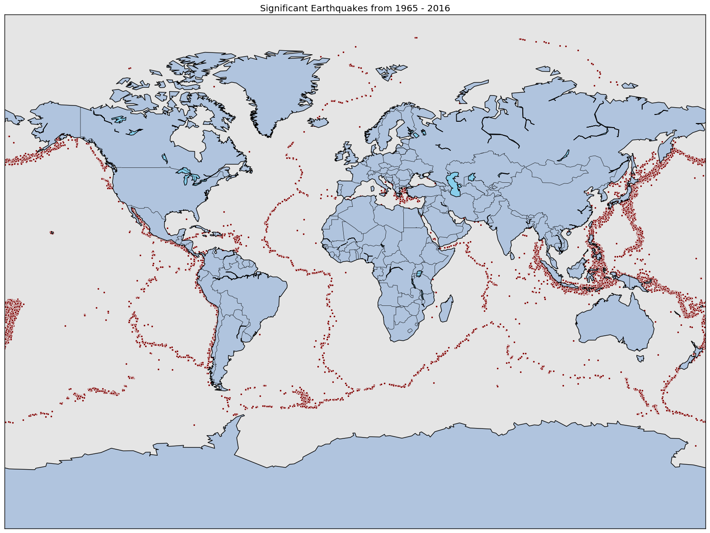
It seems like earthquakes are distributed around naturally occuring fault lines in the earth's tectonic plates. Let's make the dots appear a bit larger in order to figure out which regions have the most concentration.
fig = plt.figure(figsize=(20,20))
plt.title("Significant Earthquakes from 1965 - 2016")
m.scatter(x,y, s = 100, c = "maroon")
m.drawcoastlines()
m.drawmapboundary()
m.drawcountries()
m.fillcontinents(color='lightsteelblue',lake_color='skyblue')
plt.show()
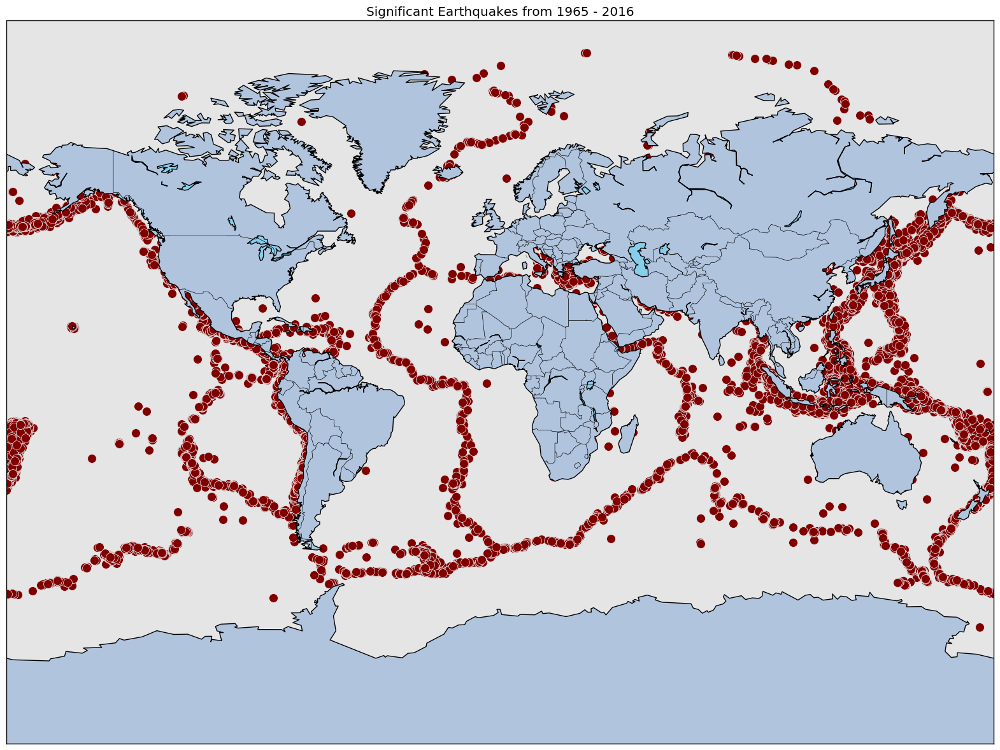
It seems that majority of earthquakes are concentrated in the Indonesian, Sino Pacific and the Japanese area. Why is this so? Before we look at magnitude of earthquakes and how it relates to the geographical distribution of significant earthqauakes, let's try to answer this question. According to National Geographic, the Pacific Ring of Fire, technically called the Circum-Pacific belt, is the world's greatest earthquake belt, according to the U.S. Geological Survey (USGS), due to its series of fault lines stretching 25,000 miles (40,000 kilometers) from Chile in the Western Hemisphere through Japan and Southeast Asia. The magazine states that
Are these statistics true? Let's find out!
I have the defined the Ring of Fire matrix to be the area of the world whose latitude is below 59.389 and above -45.783 and whose longitude is greater than -229.219 and below -65.391 degrees, (converted to about -70 to 120 on the Mercator projection). These values are obtained by drawing a rectangle that circumscribed the Ring of Fire area on the USGS interactive map.
rof_lat = [-61.270, 56.632]
rof_long = [-70, 120]
ringoffire = simple[((simple.Latitude < rof_lat[1]) &
(simple.Latitude > rof_lat[0]) &
~((simple.Longitude < rof_long[1]) &
(simple.Longitude > rof_long[0])))]
x,y = m([longs for longs in ringoffire["Longitude"]],
[lats for lats in ringoffire["Latitude"]])
fig2 = plt.figure(figsize=(20,20))
plt.title("Earthquakes in the Ring of Fire Area")
m.scatter(x,y, s = 15, c = "maroon")
m.drawcoastlines()
m.drawmapboundary()
m.drawcountries()
m.fillcontinents(color='lightsteelblue',lake_color='skyblue')
plt.show()
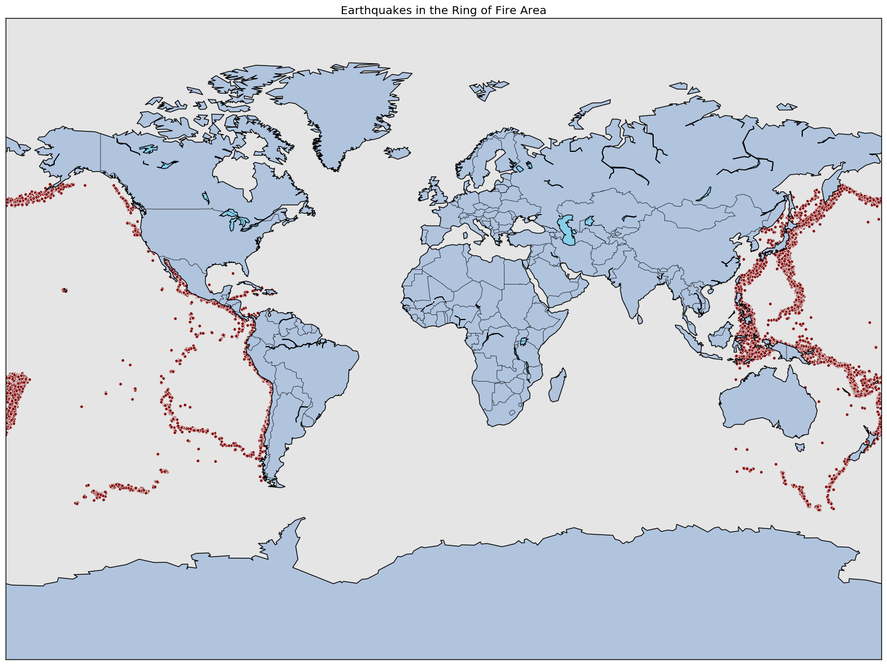
ringoffire
| Date | Time | Latitude | Longitude | Magnitude | Depth | |
|---|---|---|---|---|---|---|
| 0 | 01/02/1965 | 13:44:18 | 19.2460 | 145.6160 | 6.0 | 131.60 |
| 1 | 01/04/1965 | 11:29:49 | 1.8630 | 127.3520 | 5.8 | 80.00 |
| 2 | 01/05/1965 | 18:05:58 | -20.5790 | -173.9720 | 6.2 | 20.00 |
| 4 | 01/09/1965 | 13:32:50 | 11.9380 | 126.4270 | 5.8 | 15.00 |
| 5 | 01/10/1965 | 13:36:32 | -13.4050 | 166.6290 | 6.7 | 35.00 |
| 7 | 01/15/1965 | 23:17:42 | -13.3090 | 166.2120 | 6.0 | 35.00 |
| 9 | 01/17/1965 | 10:43:17 | -24.5630 | 178.4870 | 5.8 | 565.00 |
| 11 | 01/24/1965 | 00:11:17 | -2.6080 | 125.9520 | 8.2 | 20.00 |
| 12 | 01/29/1965 | 09:35:30 | 54.6360 | 161.7030 | 5.5 | 55.00 |
| 13 | 02/01/1965 | 05:27:06 | -18.6970 | -177.8640 | 5.6 | 482.90 |
| 15 | 02/04/1965 | 03:25:00 | -51.8400 | 139.7410 | 6.1 | 10.00 |
| 16 | 02/04/1965 | 05:01:22 | 51.2510 | 178.7150 | 8.7 | 30.30 |
| 17 | 02/04/1965 | 06:04:59 | 51.6390 | 175.0550 | 6.0 | 30.00 |
| 18 | 02/04/1965 | 06:37:06 | 52.5280 | 172.0070 | 5.7 | 25.00 |
| 19 | 02/04/1965 | 06:39:32 | 51.6260 | 175.7460 | 5.8 | 25.00 |
| 20 | 02/04/1965 | 07:11:23 | 51.0370 | 177.8480 | 5.9 | 25.00 |
| 21 | 02/04/1965 | 07:14:59 | 51.7300 | 173.9750 | 5.9 | 20.00 |
| 22 | 02/04/1965 | 07:23:12 | 51.7750 | 173.0580 | 5.7 | 10.00 |
| 23 | 02/04/1965 | 07:43:43 | 52.6110 | 172.5880 | 5.7 | 24.00 |
| 24 | 02/04/1965 | 08:06:17 | 51.8310 | 174.3680 | 5.7 | 31.80 |
| 25 | 02/04/1965 | 08:33:41 | 51.9480 | 173.9690 | 5.6 | 20.00 |
| 26 | 02/04/1965 | 08:40:44 | 51.4430 | 179.6050 | 7.3 | 30.00 |
| 27 | 02/04/1965 | 12:06:08 | 52.7730 | 171.9740 | 6.5 | 30.00 |
| 28 | 02/04/1965 | 12:50:59 | 51.7720 | 174.6960 | 5.6 | 20.00 |
| 29 | 02/04/1965 | 14:18:29 | 52.9750 | 171.0910 | 6.4 | 25.00 |
| 30 | 02/04/1965 | 15:51:25 | 52.9900 | 170.8740 | 5.8 | 25.00 |
| 31 | 02/04/1965 | 18:34:12 | 51.5360 | 175.0450 | 5.8 | 25.00 |
| 33 | 02/04/1965 | 22:30:03 | 51.8120 | 174.2060 | 5.7 | 10.00 |
| 34 | 02/05/1965 | 06:39:50 | 51.7620 | 174.8410 | 5.7 | 25.00 |
| 35 | 02/05/1965 | 09:32:11 | 52.4380 | 174.3210 | 6.3 | 39.50 |
| ... | ... | ... | ... | ... | ... | ... |
| 23379 | 12/10/2016 | 02:45:40 | -10.8829 | 161.2789 | 5.8 | 7.66 |
| 23380 | 12/10/2016 | 16:24:35 | -5.6593 | 154.4734 | 6.0 | 142.58 |
| 23381 | 12/11/2016 | 14:33:13 | -9.1237 | -109.8492 | 5.8 | 10.00 |
| 23382 | 12/11/2016 | 17:26:10 | -10.9640 | 161.5723 | 5.5 | 10.00 |
| 23383 | 12/14/2016 | 02:01:23 | 21.2897 | 144.4037 | 6.0 | 22.37 |
| 23384 | 12/14/2016 | 21:14:56 | 21.3697 | 144.2175 | 5.5 | 10.00 |
| 23385 | 12/16/2016 | 11:34:58 | 14.0882 | -90.8691 | 5.5 | 71.26 |
| 23386 | 12/17/2016 | 10:51:10 | -4.5049 | 153.5216 | 7.9 | 94.54 |
| 23387 | 12/17/2016 | 11:22:40 | -4.4244 | 153.5419 | 5.6 | 83.36 |
| 23388 | 12/17/2016 | 11:27:39 | -5.6497 | 153.9975 | 6.3 | 26.50 |
| 23389 | 12/18/2016 | 05:46:25 | -10.2137 | 161.2177 | 5.9 | 37.39 |
| 23390 | 12/18/2016 | 06:15:46 | -34.9886 | -107.8694 | 5.5 | 10.00 |
| 23391 | 12/18/2016 | 06:39:42 | -6.3046 | 154.3530 | 5.9 | 10.00 |
| 23392 | 12/18/2016 | 09:47:05 | 8.3489 | 137.6672 | 6.2 | 12.43 |
| 23393 | 12/18/2016 | 11:35:48 | -10.1904 | 161.2187 | 5.5 | 57.52 |
| 23394 | 12/18/2016 | 13:30:11 | -9.9640 | -70.9714 | 6.4 | 622.54 |
| 23395 | 12/20/2016 | 04:21:29 | -10.1773 | 161.2236 | 6.4 | 16.65 |
| 23397 | 12/20/2016 | 12:33:14 | -10.1785 | 160.9149 | 6.0 | 10.00 |
| 23398 | 12/20/2016 | 20:07:53 | -10.1549 | 160.7816 | 5.5 | 10.38 |
| 23399 | 12/21/2016 | 00:17:15 | -7.5082 | 127.9206 | 6.7 | 152.00 |
| 23400 | 12/21/2016 | 16:43:57 | 21.5036 | 145.4172 | 5.9 | 12.05 |
| 23401 | 12/24/2016 | 01:32:16 | -5.2453 | 153.5754 | 6.0 | 35.00 |
| 23402 | 12/24/2016 | 03:58:55 | -5.1460 | 153.5166 | 5.8 | 30.00 |
| 23403 | 12/25/2016 | 14:22:27 | -43.4029 | -73.9395 | 7.6 | 38.00 |
| 23404 | 12/25/2016 | 14:32:13 | -43.4810 | -74.4771 | 5.6 | 14.93 |
| 23406 | 12/28/2016 | 08:18:01 | 38.3754 | -118.8977 | 5.6 | 10.80 |
| 23407 | 12/28/2016 | 08:22:12 | 38.3917 | -118.8941 | 5.6 | 12.30 |
| 23408 | 12/28/2016 | 09:13:47 | 38.3777 | -118.8957 | 5.5 | 8.80 |
| 23409 | 12/28/2016 | 12:38:51 | 36.9179 | 140.4262 | 5.9 | 10.00 |
| 23411 | 12/30/2016 | 20:08:28 | 37.3973 | 141.4103 | 5.5 | 11.94 |
17596 rows × 6 columns
There are 17596 earthquakes which are positioned solely in the ring of fire area. There were 23412 total large earthquakes in the entire dataset. So, frequency wise, about 75.1% of significant or largest earthquakes are in the Ring of Fire region. This is extremely close to the 80% figure cited in the National Geographic.
minimum = simple["Magnitude"].min()
maximum = simple["Magnitude"].max()
average = simple["Magnitude"].mean()
print("Minimum:", minimum)
print("Maximum:",maximum)
print("Mean",average)
('Minimum:', 5.5)
('Maximum:', 9.0999999999999996)
('Mean', 5.882530753460003)
minimum = ringoffire["Magnitude"].min()
maximum = ringoffire["Magnitude"].max()
average = ringoffire["Magnitude"].mean()
print("Minimum:", minimum)
print("Maximum:",maximum)
print("Mean",average)
('Minimum:', 5.5)
('Maximum:', 9.0999999999999996)
('Mean', 5.887151057058525)
The minimum, maximum and average for both datasets are eerily close together! What does that mean? For one thing, the subset data (the Ring of Fire earthquakes) comprise almost 75% of the total data; this ensures that statistics for both datasets will be extremely similar. Secondly, and more importantly, the dataset contains only earthquakes that have more than 5.0 magnitude (significant ones). If the dataset included a list of all earthquakes, we would see that a concentration of the world's major earthquakes would be in the Ring of Fire area. We will do so later.
In the meantime, let's continue to look at some simple statistics and correlations with magnitude.
n, bins, patch = plt.hist(simple["Magnitude"], histtype = 'step', range=(5.5,9.5), bins = 10)
plt.xlabel("Earthquake Magnitudes")
plt.ylabel("Frequency")
plt.title("Frequency by Magnitude")
histo = pd.DataFrame()
for i in range(0, len(n)):
mag = str(bins[i])+ "-"+str(bins[i+1])
freq = n[i]
percentage = round((n[i]/total) * 100, 4)
histo = histo.append(pd.Series([mag, freq, percentage]), ignore_index=True)
histo.columns = ['Range of Magnitude', 'Frequency', 'Percentage']
histo
| Range of Magnitude | Frequency | Percentage | |
|---|---|---|---|
| 0 | 5.5-5.9 | 14109.0 | 60.2640 |
| 1 | 5.9-6.3 | 5655.0 | 24.1543 |
| 2 | 6.3-6.7 | 2173.0 | 9.2816 |
| 3 | 6.7-7.1 | 905.0 | 3.8655 |
| 4 | 7.1-7.5 | 347.0 | 1.4821 |
| 5 | 7.5-7.9 | 162.0 | 0.6920 |
| 6 | 7.9-8.3 | 48.0 | 0.2050 |
| 7 | 8.3-8.7 | 9.0 | 0.0384 |
| 8 | 8.7-9.1 | 2.0 | 0.0085 |
| 9 | 9.1-9.5 | 2.0 | 0.0085 |
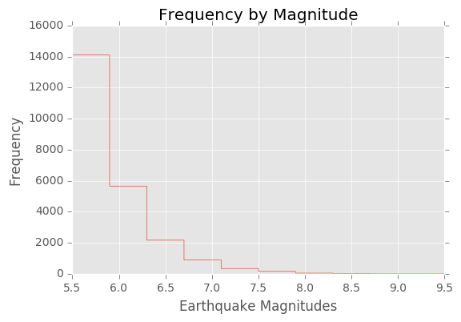
It seems that 60% of significant earthquakes had a magnitude between 5.5 to 5.86, whereas less that 4% total scored between 7.0 and 9.1 on the Richter scale.
An interesting patterns also occurs when we plot magnitudes vs frequency on a log scale.
fig, ax = plt.subplots()
#ax.plot(histo.index, fit[0] * histo.index + fit[1], color='red')
ax.scatter(histo.index, histo['Frequency'])
plt.xticks(histo.index, bins, rotation='vertical')
plt.yscale('log', nonposy='clip')
plt.xlabel("Magnitude")
plt.ylabel("Frequency")
plt.title("Worldwide Earthquake Frequencies, Logarithmic Scale")
fig.show()
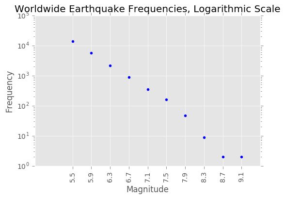
Now the earthquakes almost a straight line on the graph. This pattern is known as a power-law distribution: it turns out that for every increase of one point in magnitude, an earthquake becomes about ten times less frequent. So, for example, magnitude 6 earthquakes occur ten times more frequently than magnitude 7's, and one hundred times more often than magnitude 8's.
We can use this to relatively calculate the probability that an earthquake will hit a particular region, although it is impossible to know exactly when. For example, if we know that there were 15 earthquakes between 5.0 and 5.9 in a particular region in a period of 70 years, that works to about one earthquake in three years. Following this distribution above, we can "predict" that an earthquake measuring between 6.0 and 6.9 should occur about once every thirty years in this region.
Earthquakes can occur anywhere between the Earth's surface and about 700 kilometers below the surface. For scientific purposes, an earthquake depth range of 0 - 700 km is divided into three zones: shallow, intermediate, and deep.
shallow = len(simple[simple.Depth < 70]) #18660
intermediate = len(simple[(simple.Depth > 70) & (simple.Depth < 300)]) ##3390
deep = len(simple[simple.Depth > 300]) #1326
print str(round(shallow/float(total) * 100, 4)) + " percent of signficant earthquakes are shallow."
print str(round(intermediate/float(total) * 100, 4)) + " percent of signficant earthquakes are intermediate."
print str(round(deep/float(total) * 100, 4)) + " percent of signficant earthquakes are deep."
79.7027 percent of signficant earthquakes are shallow.
14.4798 percent of signficant earthquakes are intermediate.
5.6638 percent of signficant earthquakes are deep.
This is very surprising! There was an assumption that deep earthquakes necessarily produce significant ones, but that is not true.
What about the geographical distribution of deep earthquakes? I predict that deep earthquakes are primarily situated in the Ring of Fire.
deep_df = simple[simple.Depth > 300]
x,y = m([longs for longs in deep_df["Longitude"]],
[lats for lats in deep_df["Latitude"]])
fig = plt.figure(figsize=(20,20))
plt.title("Geographical Distribution of Deep Earthquakes")
m.scatter(x,y, s = 60, c = "maroon")
m.drawcoastlines()
m.drawmapboundary()
m.drawcountries()
m.fillcontinents(color='lightsteelblue',lake_color='skyblue')
plt.show()
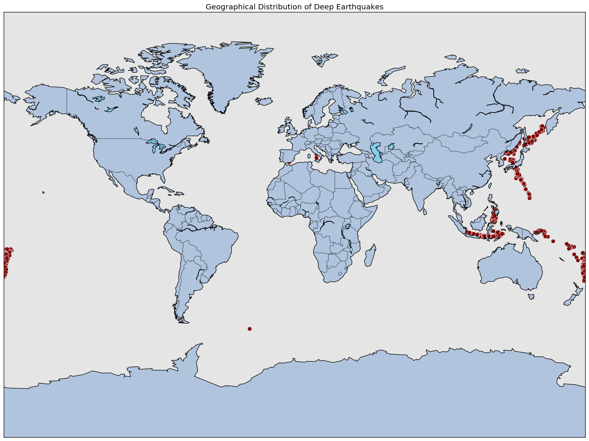
Deep earthquakes are primarily situated in the Ring of Fire area, with the exception of a few near the Italian Penninsula.
plt.scatter(simple["Magnitude"],simple["Depth"])
plt.xlabel("Magnitude")
plt.ylabel("Depth (in meters)")
plt.title("Magnitude vs Depth")
plt.show()
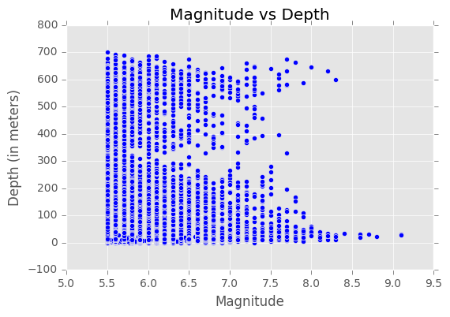
This plot tells me that earthquakes with magnitudes 5.5 to roughly 6.5 can be found in a great range of depths, from 0 meters to 700 meters. However, the depth of larger earthquakes are bimodal - they originate from the surface or from deep underground.
Are they correlated at all? Doing a simple coefficient of correlations calculation says the answer is most likely no.
np.corrcoef(simple["Magnitude"], simple["Depth"])
array([[ 1. , 0.02345731],
[ 0.02345731, 1. ]])
simple["Date"] = pd.to_datetime(simple["Date"])
simple["Month"] = simple['Date'].dt.month
simple["Year"] = simple['Date'].dt.year
freqbymonth = simple.groupby('Month').size()
freqbyyear = simple.groupby('Year').size()
fig, ax = plt.subplots(figsize = (20,10))
bar_positions = np.arange(12) + 0.5
months = ["Jan","Feb","Mar","Apr","May","Jun","Jul","Aug","Sep","Oct","Nov","Dec"]
k = plt.bar(np.arange(len(months)), freqbymonth)
plt.xticks(np.arange(len(months)), months)
plt.xlabel('Month')
plt.ylabel('Frequency')
plt.title('Earthquakes by Month')
def autolabel(rects):
"""
Attach a text label above each bar displaying its height
"""
for rect in rects:
height = rect.get_height()
ax.text(rect.get_x() + rect.get_width()/2., 1.05*height,
'%d' % int(height),
ha='center', va='bottom')
autolabel(k)
plt.show()
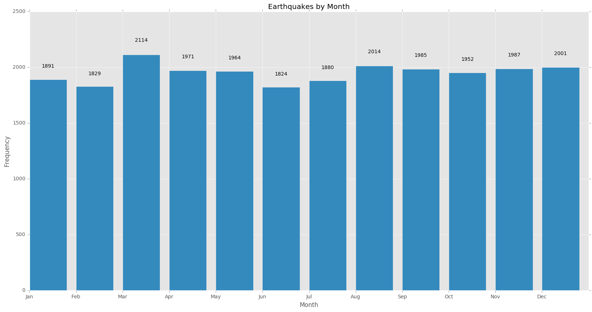
It seems that there is a uniform distribution of earthquake frequency along all 12 months.
Let's look at year.
yearly_line = plt.plot([i for i in range(1965, 2017)], freqbyyear, color = 'steelblue')
plt.xlabel('Year')
plt.ylabel('Frequency')
plt.title('Frequencies of Signficant Earthquakes by Year 1965 - 2016')
<matplotlib.text.Text at 0x11b1f04d0>
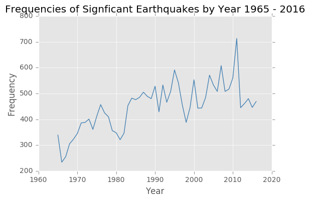
import matplotlib.pyplot as plt
import matplotlib.cm
import numpy as np
import pandas as pd
import warnings
warnings.filterwarnings('ignore')
from __future__ import division
from collections import Counter
from nltk.probability import FreqDist
from mpl_toolkits.basemap import Basemap
from matplotlib.patches import Polygon
Those are some functions I use for this dataset. We will call the functions later in the project.
def title_time(df):
"""Input: dataframe
Output: start time and end time of earthquake"""
title = '%s through %s' % (str(df['time'][df['index']==min(df['index'])]).split()[1],str(df['time'][df['index']==max(df['index'])]).split()[1])
return title
def get_marker_color(magnitude):
"""Input: magnitude
Output: green for small earthquakes (<2), yellow for moderate
earthquakes(<4), and red for significant earthquakes(>4)."""
if magnitude < 2.0:
return ('go')
elif magnitude < 4.0:
return ('yo')
else:
return ('ro')
def get_stat(statename):
"""Inpute: state name, ex: 'California'
Output: earthquake information of that state"""
ca = pd.DataFrame()
for i in range(len(us)):
if us['state'][i] == statename:
ca = ca.append(us.loc[i])
ca = ca.reset_index(drop=True)
return ca
def map_mag(df,lllon,lllat,urlon,urlat, place):
my_map = Basemap(projection='merc', lat_0=57, lon_0=-135,
resolution = 'h', area_thresh = 1000.0,
llcrnrlon=lllon, llcrnrlat=lllat,
urcrnrlon=urlon, urcrnrlat=urlat)
my_map.drawcoastlines()
my_map.drawcountries()
my_map.fillcontinents(color='coral')
my_map.drawmapboundary()
my_map.drawstates()
lats = df['latitude']
lons = df['longitude']
magnitudes = df['mag']
min_marker_size = 2.5
for lon, lat, mag in zip(lons, lats, magnitudes):
x,y = my_map(lon, lat)
msize = mag * min_marker_size
marker_string = get_marker_color(mag)
my_map.plot(x, y, marker_string, markersize=msize)
title = 'Earthquake Magnitude in %s\n' % place
title += title_time(df)
plt.title(title)
plt.show()
def get_co_data(df):
"""Input: dataframe;
Output: freq of magnitude strength"""
colors = []
for i in range(len(df)):
if get_marker_color(df['mag'][i]) == 'go':
m = 'small'
elif get_marker_color(df['mag'][i]) == 'yo':
m = 'moderate'
else:
m = 'significant'
colors.append(m)
x = range(len(colors))
f = Counter(colors)
return f
def ratio(df):
"""Input: dataframe
Output: ratio percentage for each magnitude strength"""
co = get_co_data(df)
ratio = list()
for i in range(len(co)):
r = co.values()[i]/sum(co.values())*100
ratio.append(r)
return ratio
states = ['Alabama','Alaska','Arizona','Arkansas','California','Colorado','Connecticut','Delaware','Florida','Georgia','Hawaii','Idaho', 'Illinois','Indiana','Iowa','Kansas','Kentucky','Louisiana','Maine' 'Maryland','Massachusetts','Michigan','Minnesota','Mississippi', 'Missouri','Montana','Nebraska','Nevada','New Hampshire','New Jersey','New Mexico','New York','North Carolina','North Dakota','Ohio','Oklahoma','Oregon','Pennsylvania','Rhode Island','South Carolina','South Dakota','Tennessee','Texas','Utah','Vermont','Virginia','Washington','West Virginia','Wisconsin','Wyoming']
The dataset is a csv file that has been downloaded from the USGS Earthquake Database. This dataset represents all the earthquakes that have occurred throughout the world from the month January to Febuary, 2017. This dataset includes 7660 earthquakes, but we will only focus on the data that located in the USA.
data_w = pd.read_csv('all_month.csv')
print len(data_w)
data_w.dtypes
7660
time object
latitude float64
longitude float64
depth float64
mag float64
magType object
nst float64
gap float64
dmin float64
rms float64
net object
id object
updated object
place object
type object
horizontalError float64
depthError float64
magError float64
magNst float64
status object
locationSource object
magSource object
dtype: object
def create_us_file():
state = ['Alabama','Alaska','Arizona','Arkansas','California','Colorado','Connecticut','Delaware','Florida','Georgia','Hawaii','Idaho', 'Illinois','Indiana','Iowa','Kansas','Kentucky','Louisiana','Maine' 'Maryland','Massachusetts','Michigan','Minnesota','Mississippi', 'Missouri','Montana','Nebraska','Nevada','New Hampshire','New Jersey','New Mexico','New York','North Carolina','North Dakota','Ohio','Oklahoma','Oregon','Pennsylvania','Rhode Island','South Carolina','South Dakota','Tennessee','Texas','Utah','Vermont','Virginia','Washington','West Virginia','Wisconsin','Wyoming',"AL", "AK", "AZ", "AR", "CA", "CO", "CT", "DC", "DE", "FL", "GA", "HI", "ID", "IL", "IN", "IA", "KS", "KY", "LA", "ME", "MD", "MA", "MI", "MN", "MS", "MO", "MT", "NE", "NV", "NH", "NJ", "NM", "NY", "NC", "ND", "OH", "OK", "OR", "PA", "RI", "SC", "SD", "TN", "TX", "UT", "VT", "VA", "WA", "WV", "WI", "WY"]
states_d = {'AK': 'Alaska','AL': 'Alabama','AR': 'Arkansas','AS': 'American Samoa','AZ': 'Arizona','CA': 'California','CO': 'Colorado','CT': 'Connecticut','DC': 'District of Columbia','DE': 'Delaware','FL': 'Florida','GA': 'Georgia','GU': 'Guam','HI': 'Hawaii','IA': 'Iowa','ID': 'Idaho','IL': 'Illinois','IN': 'Indiana','KS': 'Kansas','KY': 'Kentucky','LA': 'Louisiana','MA': 'Massachusetts','MD': 'Maryland','ME': 'Maine','MI': 'Michigan','MN': 'Minnesota','MO': 'Missouri','MP': 'Northern Mariana Islands','MS': 'Mississippi','MT': 'Montana','NA': 'National','NC': 'North Carolina','ND': 'North Dakota','NE': 'Nebraska','NH': 'New Hampshire','NJ': 'New Jersey','NM': 'New Mexico','NV': 'Nevada','NY': 'New York','OH': 'Ohio','OK': 'Oklahoma','OR': 'Oregon','PA': 'Pennsylvania','PR': 'Puerto Rico','RI': 'Rhode Island','SC': 'South Carolina','SD': 'South Dakota','TN': 'Tennessee','TX': 'Texas','UT': 'Utah','VA': 'Virginia','VI': 'Virgin Islands','VT': 'Vermont','WA': 'Washington','WI': 'Wisconsin','WV': 'West Virginia','WY': 'Wyoming'}
usa = pd.DataFrame()
for j in range(len(state)):
for i in range(len(data_w)):
if state[j] in data_w['place'][i].split(',')[-1]:
data_w['state'] = state[j]
usa = usa.append(data_w.loc[i])
usa = usa.reset_index()
for i in range(len(usa)):
if len(usa['state'][i]) == 2:
usa['state'][i] = states_d[usa['state'][i]]
return usa
usa = create_us_file()
#usa.to_csv('us_earthquake.csv',mode = 'w',index = False)
By making this dataset more accessible for the project, I extracted data that are located in the USA and added a new column "state" to show the states for each row. We will basicly use the columns (shown below) for this project.
data = pd.read_csv('us_earthquake.csv')
us = data[["index","time", "latitude","longitude","mag","state","place","depth"]]
us.head()
| index | time | latitude | longitude | mag | state | place | depth | |
|---|---|---|---|---|---|---|---|---|
| 0 | 0 | 2017-02-16T19:41:22.795Z | 63.8717 | -150.3950 | 1.3 | Alaska | 70km W of Healy, Alaska | 8.1 |
| 1 | 7 | 2017-02-16T17:11:22.122Z | 62.6021 | -149.8518 | 1.8 | Alaska | 33km NNE of Talkeetna, Alaska | 68.9 |
| 2 | 14 | 2017-02-16T16:28:06.568Z | 61.4375 | -151.6854 | 1.9 | Alaska | 85km NNW of Nikiski, Alaska | 83.8 |
| 3 | 19 | 2017-02-16T15:27:17.594Z | 61.7097 | -149.6386 | 1.6 | Alaska | 9km NNW of Meadow Lakes, Alaska | 30.5 |
| 4 | 20 | 2017-02-16T15:23:09.053Z | 59.9683 | -147.0029 | 2.0 | Alaska | 70km NNW of Middleton Island, Alaska | 16.5 |
"""USA territories"""
map_mag(us, -172, 15, -65.25, 71,'USA')
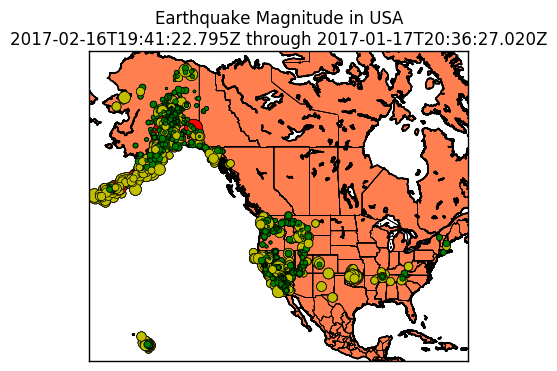
It seems that majority of earthquakes are concentrated in the West Coast of the United States, South of Alaska, and some in Nevada and Hawaii area. Why is this so? In the previous part "Earthquakse in the World", we discussed that roughly 90 percent of all earthquakes strike along the Ring of Fire, so does United States. The globel map above shows the magnitude of each earthquakes occured in the USA. There are 3 different catagories distingished by colors green, yellow, and red. Green color dots are for small earthquakes (magnitude less than 2), yellow color dots are for moderate earthquakes (magnitude less than 4), and red color dots are for significant earthquakes (magnitude greater than 4).
minimum = us["mag"].min()
maximum = us["mag"].max()
average = us["mag"].mean()
print("Minimum:", minimum)
print("Maximum:",maximum)
print("Mean",average)
('Minimum:', -0.91000000000000003)
('Maximum:', 5.2999999999999998)
('Mean', 1.2374354862224841)
The minimum magnitude in this dataset is -0.91. The maximum magnitude is 5.30. Average is 1.24 which means small earthquakes occurred the most frequently. Is this true for every states?
s = list()
m = list()
l = list()
for state in states:
state_name = get_stat(state)
co = get_co_data(state_name)
vals = co['small'] #significant count value
s.append(vals)
valm = co['moderate']
m.append(valm)
vall = co['significant']
l.append(vall)
sb = pd.DataFrame({'small':s, 'moderate':m, 'significant':l})
sb.plot(kind='bar', stacked=True, color = ['blue','yellow','red'])
plt.ylabel('Numbers of Earthquakes')
plt.title('Stacked Bar Plot for Magnitude Strength of United States')
plt.xticks(np.arange(len(states)), states, rotation = 90,size = 8)
plt.show()
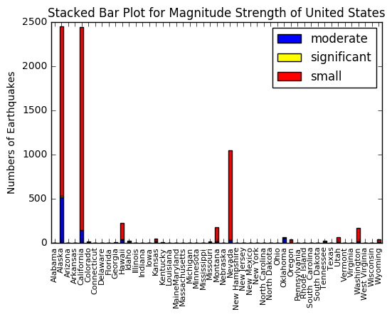
This is a stacked bar plot for the magnitude strength. However, let's break down the y-axis to visualize the data more clearly.
s = list()
m = list()
l = list()
for state in states:
state_name = get_stat(state)
co = get_co_data(state_name)
vals = co['small'] #significant count value
s.append(vals)
valm = co['moderate']
m.append(valm)
vall = co['significant']
l.append(vall)
df = pd.DataFrame({'small':s, 'moderate':m, 'significant':l})
f, axis = plt.subplots(2, 1, sharex=True)
df.plot(kind='bar', ax=axis[0],stacked=True, color = ['blue','yellow','red'])
df.plot(kind='bar', ax=axis[1],stacked=True, color = ['blue','yellow','red'])
plt.xticks(np.arange(len(states)), states, rotation = 90,size = 8)
axis[0].set_ylim(450, 2480)
axis[1].set_ylim(0, 100)
axis[1].legend().set_visible(False)
axis[0].spines['bottom'].set_visible(False)
axis[1].spines['top'].set_visible(False)
axis[0].xaxis.tick_top()
axis[0].tick_params(labeltop='off')
axis[1].xaxis.tick_bottom()
d = .015
kwargs = dict(transform=axis[0].transAxes, color='k', clip_on=False)
axis[0].plot((-d,+d),(-d,+d), **kwargs)
axis[0].plot((1-d,1+d),(-d,+d), **kwargs)
kwargs.update(transform=axis[1].transAxes)
axis[1].plot((-d,+d),(1-d,1+d), **kwargs)
axis[1].plot((1-d,1+d),(1-d,1+d), **kwargs)
plt.show()
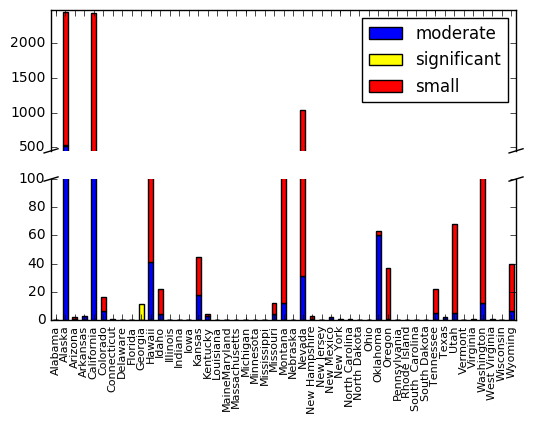
The stacked bar plot above shows the distribution of the magnitude strength for each states in the USA. We set the small earthquakes (red color) with magnitudes less than 2, moderate earthquakes (blue color) with magnitudes less than 4, and significant earthquakes (yellow color) with magnitudes greater than 4. If we look at magnitude strength by ratio, most of the states have the highest ratio on small earthquakes and the lowest ratio on significant earthquakes. However, Georgia has the highest ratio for significant earthquakes Oklahoma has the highest ratio for moderate earthquakes.
gr = get_stat('Georgia')
grv = get_co_data(gr)
print grv
print ratio(gr)
ok = get_stat('Oklahoma')
okv = get_co_data(ok)
print okv
print ratio(ok)
Counter({'significant': 11})
[100.0]
Counter({'moderate': 60, 'small': 3})
[4.761904761904762, 95.23809523809523]
The function (above) shows that Georgia has 100% significant earthquakes, and Oklahoma has 95% for the moderate earthquakes. However, the dataset for Georgia and Oklahoma are too small that if we want a further analysis, we will have to include more dataset for it to be unbiased.
c = us['state'].value_counts()
x = c.values
y = c.index
l = np.arange(len(c))
fig,ax = plt.subplots()
rects = ax.patches
plt.bar(l, x, color = 'pink')
plt.xticks(l, y, size = 9,rotation = 90)
plt.ylabel('Numbers of Earthquakes')
plt.xlabel('State Names')
plt.title('Numbers of Earthquakes by States Names')
labels = x
for rect, label in zip(rects, labels):
height = rect.get_height()
ax.text(rect.get_x() + rect.get_width()/2, height + 5, label, ha='center', va='bottom',fontweight='bold',rotation = 45)
plt.show()
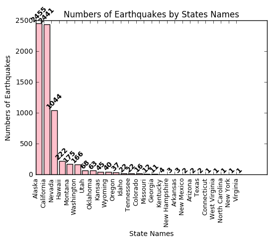
This is a histogram with numbers of earthquakes by state names. The numbers on top of each bar shows the exact amount earthquakes occured in that state. Most of the earthquakes occurs in Alaska and California, which has occured 2455 and 2441 times respectively during the month.
ak = get_stat('Alaska')
ca = get_stat('California')
"""Alaska"""
map_mag(ak, -172, 48, -126, 72, 'Alaska')
"""California"""
map_mag(ca, -125, 32, -114, 42, 'California')
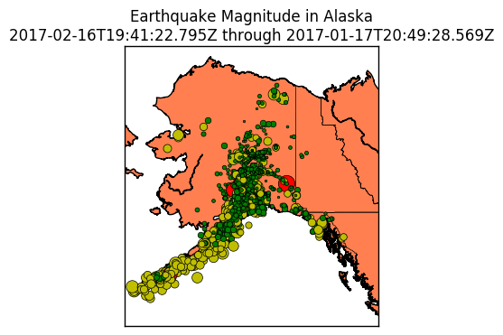
The earthquakes in Alaska seems to be more concentrated than the earthquakes in California that are spread out along the coast and along the east side of California. How about their magnitude?
akv = get_co_data(ak).values()
cav = get_co_data(ca).values()
twobar = pd.DataFrame({'Alaska':akv, 'California':cav})
twobar.plot(kind='bar',color = ['yellow','cornflowerblue'])
ind = np.arange(3)
plt.xticks(range(3),get_co_data(ak).keys(),rotation = 0)
plt.ylabel('Numbers of Earthquakes')
plt.xlabel('Strength of Earthquakes')
plt.title('Bar Plots for California vs Alaska Magnitudes')
for a,b in zip(ind, akv):
plt.text(a, b, str(b),fontweight='bold',va='bottom',ha='right',color = 'darkgoldenrod')
for a,b in zip(ind, cav):
plt.text(a, b, str(b),fontweight='bold',va='bottom',ha='left',color = 'darkblue')
plt.show()
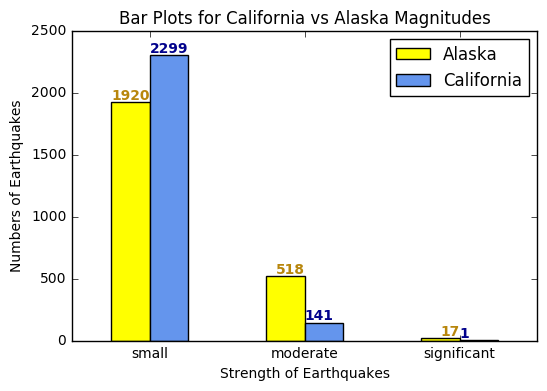
Comparing the barplots of magnitude strength for California and Alaska, we can see that the most earthquakes for both states are small earthquakes which has magnitude that are less than 2. However, Alaska has 379 less small earthquakes than the numbers of small earthquakes in California, but Alaska has 377 and 16 more moderate and significant earthquakes than the earthquakes in California. What does that mean? Let's look at their ratio.
rak = ratio(ak)
rca = ratio(ca)
ind = range(len(rak))
co = get_co_data(ak)
plt.plot(rak,'blue',label = 'Alaska')
plt.plot(rca,'red',label = 'California')
plt.ylabel('Ratio in Percentage (%)')
plt.xlabel('Earthquake Strength')
plt.title('Ratio of Alaska vs. California')
plt.xticks(range(3), co.keys())
for a,b in zip(ind, rak):
plt.text(a, b, str(round(b,1)) + '%',fontweight='bold',color = 'midnightblue')
for a,b in zip(ind, rca):
plt.text(a, b, str(round(b,1)) + '%',fontweight='bold',va='top', color = 'darkred')
plt.legend(loc = 'upper right')
plt.show()
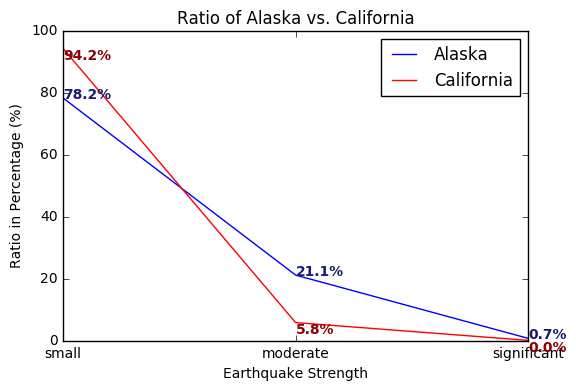
I divided each values by its total numbers of earthquakes, and then times 100 to get the percentage. Around 22% more of the earthquakes in Alaska are moderate or significant earthquakes, comparing to California's earthquakes. Alaska tends to have more moderate and significant earthquakes than California.
In the previous part, we discussed that earthquakes with magnitudes 5.5 to 6.5 does not have an relationship with depth of the earthquake. However, we want to test it with a different dataset which include magnitudes range from -0.91 to 5.30.
plt.scatter(us['mag'],us['depth'])
plt.ylabel('depth')
plt.xlabel('magnitude')
plt.title('Magnitude vs Depth Scattered Plot in the USA')
plt.show()
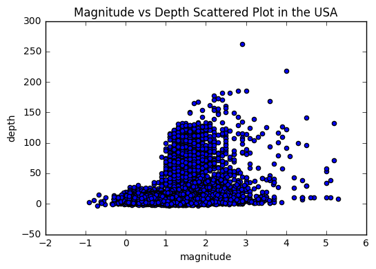
This plot tells me that earthquakes with magnitudes roughly 0 to 5.3 can be found in a range of depths, from 0 meters to around 270 meters. There seems to have correlation for the earthquakes with small magnitude. As the magnitude gets larger, depth range gets larger. Does that means there is a correlation between the two? We get a correlation coefficient of 0.33 which indicate a weak positive linear relationship, so there is a weak correlation between depth of the earthquake and magnitude of the earthquake.
df = us[['mag','depth']]
df.corr()
| mag | depth | |
|---|---|---|
| mag | 1.000000 | 0.327762 |
| depth | 0.327762 | 1.000000 |
The majority of earthquakes in the USA are concentrated in the West Coast of the United States, South of Alaska, and some in Nevada and Hawaii area. Most of the earthquakes in each states has the highest ratio on small earthquakes and lowest ratio on significant earthquakes. Alaska and California are the two states that have the most earthquakes. By comparing Alaska with California, we found that Alaska tends to have more moderate and significant earthquakes than California. By comparing depth of the earthquake to the magnitude of the earthquake, we found that there is a weak correlation between depth of the earthquake and magnitude of the earthquake.
In this part of the project, I took a dataset of significant earthquakes from 1965-2012. The tsunami dataset contains a list of observations of tsunamis that have occured throughout history and comes from the NOAA website that contains many types of information related to tsunamis. Big earthquakes are said to cause tsunamis so I will be analyzing how earthquakes and tsunamis are related what how big of earthquakes usually cause tsunamis.
import pandas as pd
import matplotlib
from matplotlib import pyplot as plt
import numpy as np
plt.style.use('ggplot')
# earthquakes dataframe
earthquakes = pd.read_csv('world_eq.csv')
earthquakes.head(10)
| Date | Time | Latitude | Longitude | Type | Depth | Depth Error | Depth Seismic Stations | Magnitude | Magnitude Type | ... | Magnitude Seismic Stations | Azimuthal Gap | Horizontal Distance | Horizontal Error | Root Mean Square | ID | Source | Location Source | Magnitude Source | Status | |
|---|---|---|---|---|---|---|---|---|---|---|---|---|---|---|---|---|---|---|---|---|---|
| 0 | 1/2/1965 | 13:44:18 | 19.246 | 145.616 | Earthquake | 131.6 | NaN | NaN | 6.0 | MW | ... | NaN | NaN | NaN | NaN | NaN | ISCGEM860706 | ISCGEM | ISCGEM | ISCGEM | Automatic |
| 1 | 1/4/1965 | 11:29:49 | 1.863 | 127.352 | Earthquake | 80.0 | NaN | NaN | 5.8 | MW | ... | NaN | NaN | NaN | NaN | NaN | ISCGEM860737 | ISCGEM | ISCGEM | ISCGEM | Automatic |
| 2 | 1/5/1965 | 18:05:58 | -20.579 | -173.972 | Earthquake | 20.0 | NaN | NaN | 6.2 | MW | ... | NaN | NaN | NaN | NaN | NaN | ISCGEM860762 | ISCGEM | ISCGEM | ISCGEM | Automatic |
| 3 | 1/8/1965 | 18:49:43 | -59.076 | -23.557 | Earthquake | 15.0 | NaN | NaN | 5.8 | MW | ... | NaN | NaN | NaN | NaN | NaN | ISCGEM860856 | ISCGEM | ISCGEM | ISCGEM | Automatic |
| 4 | 1/9/1965 | 13:32:50 | 11.938 | 126.427 | Earthquake | 15.0 | NaN | NaN | 5.8 | MW | ... | NaN | NaN | NaN | NaN | NaN | ISCGEM860890 | ISCGEM | ISCGEM | ISCGEM | Automatic |
| 5 | 1/10/1965 | 13:36:32 | -13.405 | 166.629 | Earthquake | 35.0 | NaN | NaN | 6.7 | MW | ... | NaN | NaN | NaN | NaN | NaN | ISCGEM860922 | ISCGEM | ISCGEM | ISCGEM | Automatic |
| 6 | 1/12/1965 | 13:32:25 | 27.357 | 87.867 | Earthquake | 20.0 | NaN | NaN | 5.9 | MW | ... | NaN | NaN | NaN | NaN | NaN | ISCGEM861007 | ISCGEM | ISCGEM | ISCGEM | Automatic |
| 7 | 1/15/1965 | 23:17:42 | -13.309 | 166.212 | Earthquake | 35.0 | NaN | NaN | 6.0 | MW | ... | NaN | NaN | NaN | NaN | NaN | ISCGEM861111 | ISCGEM | ISCGEM | ISCGEM | Automatic |
| 8 | 1/16/1965 | 11:32:37 | -56.452 | -27.043 | Earthquake | 95.0 | NaN | NaN | 6.0 | MW | ... | NaN | NaN | NaN | NaN | NaN | ISCGEMSUP861125 | ISCGEMSUP | ISCGEM | ISCGEM | Automatic |
| 9 | 1/17/1965 | 10:43:17 | -24.563 | 178.487 | Earthquake | 565.0 | NaN | NaN | 5.8 | MW | ... | NaN | NaN | NaN | NaN | NaN | ISCGEM861148 | ISCGEM | ISCGEM | ISCGEM | Automatic |
10 rows × 21 columns
len(earthquakes.index)
23412
earthquakes = earthquakes[["Date", "Time", "Latitude","Longitude","Magnitude", "Depth"]]
earthquakes.head()
| Date | Time | Latitude | Longitude | Magnitude | Depth | |
|---|---|---|---|---|---|---|
| 0 | 1/2/1965 | 13:44:18 | 19.246 | 145.616 | 6.0 | 131.6 |
| 1 | 1/4/1965 | 11:29:49 | 1.863 | 127.352 | 5.8 | 80.0 |
| 2 | 1/5/1965 | 18:05:58 | -20.579 | -173.972 | 6.2 | 20.0 |
| 3 | 1/8/1965 | 18:49:43 | -59.076 | -23.557 | 5.8 | 15.0 |
| 4 | 1/9/1965 | 13:32:50 | 11.938 | 126.427 | 5.8 | 15.0 |
# tsunamis dataframe
tsunamis = pd.read_excel('tsevent.xlsx')
tsunamis.head()
| ID | YEAR | MONTH | DAY | HOUR | MINUTE | SECOND | EVENT_VALIDITY | CAUSE_CODE | FOCAL_DEPTH | ... | TOTAL_MISSING | TOTAL_MISSING_DESCRIPTION | TOTAL_INJURIES | TOTAL_INJURIES_DESCRIPTION | TOTAL_DAMAGE_MILLIONS_DOLLARS | TOTAL_DAMAGE_DESCRIPTION | TOTAL_HOUSES_DESTROYED | TOTAL_HOUSES_DESTROYED_DESCRIPTION | TOTAL_HOUSES_DAMAGED | TOTAL_HOUSES_DAMAGED_DESCRIPTION | |
|---|---|---|---|---|---|---|---|---|---|---|---|---|---|---|---|---|---|---|---|---|---|
| 0 | 1 | -2000 | NaN | NaN | NaN | NaN | NaN | 1.0 | 1.0 | NaN | ... | NaN | NaN | NaN | NaN | NaN | 4.0 | NaN | NaN | NaN | NaN |
| 1 | 3 | -1610 | NaN | NaN | NaN | NaN | NaN | 4.0 | 6.0 | NaN | ... | NaN | NaN | NaN | NaN | NaN | 3.0 | NaN | NaN | NaN | NaN |
| 2 | 4 | -1365 | NaN | NaN | NaN | NaN | NaN | 1.0 | 1.0 | NaN | ... | NaN | NaN | NaN | NaN | NaN | 3.0 | NaN | NaN | NaN | NaN |
| 3 | 5 | -1300 | NaN | NaN | NaN | NaN | NaN | 2.0 | 0.0 | NaN | ... | NaN | NaN | NaN | NaN | NaN | NaN | NaN | NaN | NaN | NaN |
| 4 | 6 | -760 | NaN | NaN | NaN | NaN | NaN | 2.0 | 0.0 | NaN | ... | NaN | NaN | NaN | NaN | NaN | NaN | NaN | NaN | NaN | NaN |
5 rows × 46 columns
from mpl_toolkits.basemap import Basemap
from matplotlib.colors import rgb2hex
from matplotlib.patches import Polygon
for i in range(0, len(tsunamis.columns.values)):
tsunamis.columns.values[i] = str(tsunamis.columns.values[i])
# delete unnecessary columns
tsunamis.drop(tsunamis.columns[[range(16,46)]], inplace = True, axis = 1)
tsunamis = tsunamis[["ID", "YEAR", "MONTH", "DAY", "HOUR", "MINUTE", "COUNTRY", "STATE", "LOCATION_NAME", "LATITUDE", "LONGITUDE"]]
tsunamis.head()
| ID | YEAR | MONTH | DAY | HOUR | MINUTE | COUNTRY | STATE | LOCATION_NAME | LATITUDE | LONGITUDE | |
|---|---|---|---|---|---|---|---|---|---|---|---|
| 0 | 1 | -2000 | NaN | NaN | NaN | NaN | SYRIA | NaN | SYRIAN COASTS | 35.683 | 35.80 |
| 1 | 3 | -1610 | NaN | NaN | NaN | NaN | GREECE | NaN | THERA ISLAND (SANTORINI) | 36.400 | 25.40 |
| 2 | 4 | -1365 | NaN | NaN | NaN | NaN | SYRIA | NaN | SYRIAN COASTS | 35.683 | 35.80 |
| 3 | 5 | -1300 | NaN | NaN | NaN | NaN | TURKEY | NaN | IONIAN COASTS, TROAD | 39.960 | 26.24 |
| 4 | 6 | -760 | NaN | NaN | NaN | NaN | ISRAEL | NaN | ISRAEL AND LEBANON COASTS | NaN | NaN |
I felt that some of these variables in the tsunami datasets, with most of them being the number of destructions, injured, and damages were unnecessary in this part of the project so I deleted those variables from the dataset.
# Drop N/A lon/lat values for tsunami
# I filtered with longitude because if longitude has N/A, corresponding latitude also has it
tsu = tsunamis.loc[np.isnan(tsunamis['LONGITUDE']) == False]
tsu.head()
| ID | YEAR | MONTH | DAY | HOUR | MINUTE | COUNTRY | STATE | LOCATION_NAME | LATITUDE | LONGITUDE | |
|---|---|---|---|---|---|---|---|---|---|---|---|
| 0 | 1 | -2000 | NaN | NaN | NaN | NaN | SYRIA | NaN | SYRIAN COASTS | 35.683 | 35.80 |
| 1 | 3 | -1610 | NaN | NaN | NaN | NaN | GREECE | NaN | THERA ISLAND (SANTORINI) | 36.400 | 25.40 |
| 2 | 4 | -1365 | NaN | NaN | NaN | NaN | SYRIA | NaN | SYRIAN COASTS | 35.683 | 35.80 |
| 3 | 5 | -1300 | NaN | NaN | NaN | NaN | TURKEY | NaN | IONIAN COASTS, TROAD | 39.960 | 26.24 |
| 5 | 7 | -590 | NaN | NaN | NaN | NaN | LEBANON | NaN | LEBANON COASTS | 33.270 | 35.22 |
I noticed that my tsunami dataset had some N/A values for some observations so I dropped those observations or I would not have been able to plot those observations on a new map.
recenttsu = tsu.loc[tsunamis['YEAR'] > 1964]
recenttsu.head()
| ID | YEAR | MONTH | DAY | HOUR | MINUTE | COUNTRY | STATE | LOCATION_NAME | LATITUDE | LONGITUDE | |
|---|---|---|---|---|---|---|---|---|---|---|---|
| 2026 | 1963 | 1965 | 1.0 | 24.0 | 0.0 | 11.0 | INDONESIA | NaN | SANANA ISLAND | -2.400 | 126.100 |
| 2027 | 1964 | 1965 | 2.0 | 4.0 | 5.0 | 1.0 | USA | AK | RAT ISLANDS, ALEUTIAN ISLANDS, AK | 51.290 | 178.550 |
| 2028 | 5470 | 1965 | 2.0 | 19.0 | NaN | NaN | CHILE | NaN | SOUTHERN CHILE | -41.755 | -72.396 |
| 2029 | 1965 | 1965 | 2.0 | 23.0 | 22.0 | 11.0 | CHILE | NaN | NORTHERN CHILE | -25.670 | -70.630 |
| 2030 | 3042 | 1965 | 3.0 | 9.0 | 17.0 | 57.0 | GREECE | NaN | AEGEAN SEA | 39.400 | 24.000 |
len(recenttsu.index)
546
The dataset above is a list of tsunamis that happened from 1965-2017 which corresponds with the timeframe of the earthquakes dataset.
# draw world map
plt.figure(figsize=(15,10))
displaymap = Basemap(llcrnrlon=-180,llcrnrlat=-90,urcrnrlon=180,urcrnrlat=90)
displaymap.drawmapboundary()
displaymap.drawcountries()
displaymap.drawcoastlines()
C:\Users\Apus\Anaconda2\lib\site-packages\mpl_toolkits\basemap\__init__.py:1623: MatplotlibDeprecationWarning: The get_axis_bgcolor function was deprecated in version 2.0. Use get_facecolor instead.
fill_color = ax.get_axis_bgcolor()
<matplotlib.collections.LineCollection at 0xc4725c0>
# Convert longitudes and latitudes to list of floats
longitude = earthquakes[['Longitude']].values.tolist()
for i in range(0, len(longitude)):
longitude[i] = float(longitude[i][0])
latitude = earthquakes[['Latitude']].values.tolist()
for i in range(0, len(latitude)):
latitude[i] = float(latitude[i][0])
tlongitude = recenttsu[[u'LONGITUDE']].values.tolist()
for i in range(0, len(tlongitude)):
tlongitude[i] = float(tlongitude[i][0])
tlatitude = recenttsu[[u'LATITUDE']].values.tolist()
for i in range(0, len(tlatitude)):
tlatitude[i] = float(tlatitude[i][0])
lons,lats = displaymap(longitude, latitude)
tlons, tlats = displaymap(tlongitude, tlatitude)
displaymap.plot(lons, lats, 'bo', color = "blue")
displaymap.plot(tlons, tlats, 'bo', color = "red")
C:\Users\Apus\Anaconda2\lib\site-packages\mpl_toolkits\basemap\__init__.py:3260: MatplotlibDeprecationWarning: The ishold function was deprecated in version 2.0.
b = ax.ishold()
C:\Users\Apus\Anaconda2\lib\site-packages\mpl_toolkits\basemap\__init__.py:3269: MatplotlibDeprecationWarning: axes.hold is deprecated.
See the API Changes document (http://matplotlib.org/api/api_changes.html)
for more details.
ax.hold(b)
[<matplotlib.lines.Line2D at 0xcbd1c50>]
plt.title("Earthquakes and Tsunamis around the World from `1965-2017")
plt.show()
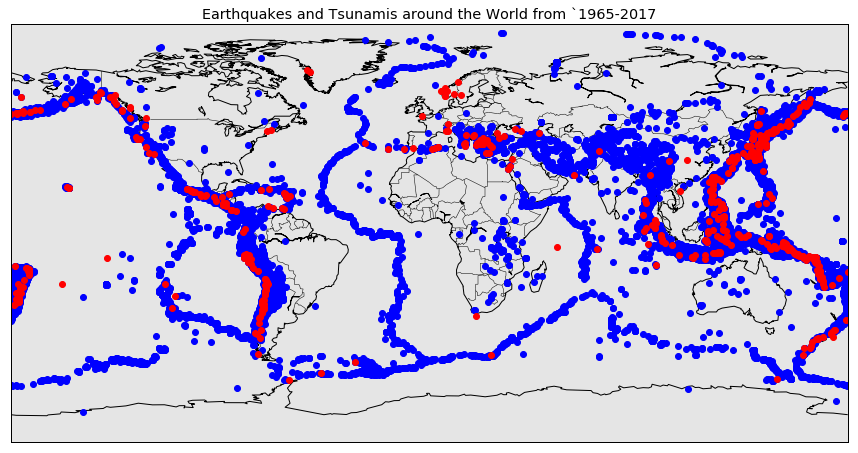
First, I converted all the observations for longitude and latitude in both sets from strings to floats. Then I plotted a map and all the known points for the earthquakes dataset and all the known points for the tsunami datasets. It seems that a lot of the points both overlap somewhere in the North American region and in the East Asian region and in the area known as the Ring of Fire where a large number of earthquakes and volcanic activity occur. It also looks like more tsunamis have occured in the Europe region rather than earthquakes.
dates = earthquakes[['Date']].values.tolist()
years = []
months = []
days = []
for i in range(0, len(dates)):
dates[i] = dates[i][0].split("/")
try:
years.append(dates[i][2])
except IndexError:
years.append('NaN')
try:
months.append(dates[i][0])
except IndexError:
months.append('NaN')
try:
days.append(dates[i][1])
except IndexError:
days.append('NaN')
idlist = []
for i in range(0, len(earthquakes.index)):
idlist.append(i)
earthquakes['Year'] = years
earthquakes['Month'] = months
earthquakes['Days'] = days
earthquakes['ID'] = idlist
earthquakes.head()
| Date | Time | Latitude | Longitude | Magnitude | Depth | Year | Month | Days | ID | |
|---|---|---|---|---|---|---|---|---|---|---|
| 0 | 1/2/1965 | 13:44:18 | 19.246 | 145.616 | 6.0 | 131.6 | 1965 | 1 | 2 | 0 |
| 1 | 1/4/1965 | 11:29:49 | 1.863 | 127.352 | 5.8 | 80.0 | 1965 | 1 | 4 | 1 |
| 2 | 1/5/1965 | 18:05:58 | -20.579 | -173.972 | 6.2 | 20.0 | 1965 | 1 | 5 | 2 |
| 3 | 1/8/1965 | 18:49:43 | -59.076 | -23.557 | 5.8 | 15.0 | 1965 | 1 | 8 | 3 |
| 4 | 1/9/1965 | 13:32:50 | 11.938 | 126.427 | 5.8 | 15.0 | 1965 | 1 | 9 | 4 |
I split the dates into days, months, and years and added those rows to the dataset so I can analyze the dataset more flexibly. I also added IDs to each observation in order to remember specific ones.
I am interested in seeing how many earthquakes cause tsunamis in each year and their magnitude so I will pick two random years and analyze the earthquakes and tsunamis in those years.
float(len(recenttsu.index))/float(len(earthquakes.index))
0.023321373654536137
Earthquakes are sometimes said to cause tsunamis and based on this, about 2.3% of earthquakes cause tsunamis.
eq2012 = earthquakes.loc[(earthquakes['Year'] == '2012')]
tsu2012 = tsu.loc[tsu[u'YEAR'] == 2012]
tsu2012
| ID | YEAR | MONTH | DAY | HOUR | MINUTE | COUNTRY | STATE | LOCATION_NAME | LATITUDE | LONGITUDE | |
|---|---|---|---|---|---|---|---|---|---|---|---|
| 2515 | 5442 | 2012 | 2.0 | 2.0 | 13.0 | 34.0 | VANUATU | NaN | VANUATU ISLANDS | -17.827 | 167.133 |
| 2516 | 5446 | 2012 | 3.0 | 14.0 | 9.0 | 8.0 | JAPAN | NaN | HOKKAIDO ISLAND | 40.887 | 144.944 |
| 2517 | 5447 | 2012 | 3.0 | 20.0 | 18.0 | 2.0 | MEXICO | NaN | S. MEXICO | 16.493 | -98.231 |
| 2518 | 5449 | 2012 | 4.0 | 11.0 | 8.0 | 38.0 | INDONESIA | NaN | OFF W. COAST OF N SUMATRA | 2.327 | 93.063 |
| 2519 | 5450 | 2012 | 4.0 | 11.0 | 10.0 | 43.0 | INDONESIA | NaN | OFF W. COAST OF N SUMATRA | 0.802 | 92.463 |
| 2520 | 5451 | 2012 | 4.0 | 14.0 | 22.0 | 5.0 | VANUATU | NaN | VANUATU ISLANDS | -18.972 | 168.741 |
| 2521 | 5460 | 2012 | 7.0 | 15.0 | NaN | NaN | GREENLAND | NaN | ILULISSAT ICEFJORD | 69.200 | -51.300 |
| 2522 | 5462 | 2012 | 8.0 | 27.0 | 4.0 | 37.0 | NICARAGUA | NaN | OFF THE COAST | 12.139 | -88.590 |
| 2523 | 5463 | 2012 | 8.0 | 31.0 | 12.0 | 47.0 | PHILIPPINES | NaN | PHILIPPINE ISLANDS | 10.811 | 126.638 |
| 2524 | 5464 | 2012 | 9.0 | 5.0 | 14.0 | 42.0 | COSTA RICA | NaN | COSTA RICA | 10.085 | -85.315 |
| 2525 | 5467 | 2012 | 10.0 | 28.0 | 3.0 | 4.0 | CANADA | BC | BRITISH COLUMBIA | 52.788 | -132.101 |
| 2526 | 5468 | 2012 | 11.0 | 7.0 | 16.0 | 35.0 | GUATEMALA | NaN | GUATEMALA | 13.988 | -91.895 |
| 2527 | 5469 | 2012 | 12.0 | 7.0 | 8.0 | 18.0 | JAPAN | NaN | OFF EAST COAST OF HONSHU ISLAND | 37.890 | 143.949 |
| 2528 | 5471 | 2012 | 12.0 | 28.0 | NaN | NaN | CHINA | NaN | ZHAOJUN BRIDGE, HUBEI PROVINCE | 31.256 | 110.733 |
print len(tsu2012), len(eq2012)
14 445
In the year 2012, it looks like there is 1 tsunami that occured in February, 2 in March, 3 in April, 1 in July, 2 in August, 1 in September, 1 in October, 1 in Novemer, and 2 in December with a total of 14 tsunamis. There are 445 earthquakes total in the year 2012.
tsu2012.loc[tsu2012[u'MONTH'] == 2]
| ID | YEAR | MONTH | DAY | HOUR | MINUTE | COUNTRY | STATE | LOCATION_NAME | LATITUDE | LONGITUDE | |
|---|---|---|---|---|---|---|---|---|---|---|---|
| 2515 | 5442 | 2012 | 2.0 | 2.0 | 13.0 | 34.0 | VANUATU | NaN | VANUATU ISLANDS | -17.827 | 167.133 |
eq2012.loc[(eq2012['Month'] == '2') & (eq2012['Days'] == '2')]
| Date | Time | Latitude | Longitude | Magnitude | Depth | Year | Month | Days | ID | |
|---|---|---|---|---|---|---|---|---|---|---|
| 21142 | 2/2/2012 | 6:46:30 | -6.563 | 149.774 | 5.6 | 51.3 | 2012 | 2 | 2 | 21142 |
| 21143 | 2/2/2012 | 9:32:17 | -6.586 | 149.718 | 5.6 | 38.6 | 2012 | 2 | 2 | 21143 |
| 21144 | 2/2/2012 | 13:34:41 | -17.827 | 167.133 | 7.1 | 23.0 | 2012 | 2 | 2 | 21144 |
| 21145 | 2/2/2012 | 17:27:07 | -17.954 | 167.179 | 5.5 | 20.6 | 2012 | 2 | 2 | 21145 |
I will look at the time, longitude, and latitude of the observations in the earthquakes and if any matches the tsunami values, then it is assumed that that specific earthquake caused the tsunami. The earthquake observation that matches this tsunami observation is the third observation in the earthquakes that happened in February 2012.
earthquakes.loc[earthquakes['ID'] == 21144]
| Date | Time | Latitude | Longitude | Magnitude | Depth | Year | Month | Days | ID | |
|---|---|---|---|---|---|---|---|---|---|---|
| 21144 | 2/2/2012 | 13:34:41 | -17.827 | 167.133 | 7.1 | 23.0 | 2012 | 2 | 2 | 21144 |
Now I will do the same for March and the rest of the months
tsu2012.loc[tsu2012[u'MONTH'] == 3]
| ID | YEAR | MONTH | DAY | HOUR | MINUTE | COUNTRY | STATE | LOCATION_NAME | LATITUDE | LONGITUDE | |
|---|---|---|---|---|---|---|---|---|---|---|---|
| 2516 | 5446 | 2012 | 3.0 | 14.0 | 9.0 | 8.0 | JAPAN | NaN | HOKKAIDO ISLAND | 40.887 | 144.944 |
| 2517 | 5447 | 2012 | 3.0 | 20.0 | 18.0 | 2.0 | MEXICO | NaN | S. MEXICO | 16.493 | -98.231 |
eq2012.loc[(eq2012['Month'] == '3') & ((eq2012['Days'] == '14') | (eq2012['Days'] == '20'))]
| Date | Time | Latitude | Longitude | Magnitude | Depth | Year | Month | Days | ID | |
|---|---|---|---|---|---|---|---|---|---|---|
| 21192 | 3/14/2012 | 9:08:35 | 40.887 | 144.944 | 6.9 | 12.0 | 2012 | 3 | 14 | 21192 |
| 21193 | 3/14/2012 | 10:49:25 | 40.781 | 144.761 | 6.1 | 10.0 | 2012 | 3 | 14 | 21193 |
| 21194 | 3/14/2012 | 10:57:40 | 40.755 | 144.806 | 5.6 | 12.0 | 2012 | 3 | 14 | 21194 |
| 21195 | 3/14/2012 | 12:05:05 | 35.687 | 140.695 | 6.0 | 10.0 | 2012 | 3 | 14 | 21195 |
| 21196 | 3/14/2012 | 21:13:08 | -5.595 | 151.042 | 6.2 | 28.0 | 2012 | 3 | 14 | 21196 |
| 21202 | 3/20/2012 | 17:56:19 | -3.812 | 140.266 | 6.1 | 66.0 | 2012 | 3 | 20 | 21202 |
| 21203 | 3/20/2012 | 18:02:47 | 16.493 | -98.231 | 7.4 | 20.0 | 2012 | 3 | 20 | 21203 |
earthquakes.loc[(earthquakes['ID'] == 21192) | (earthquakes['ID'] == 21203)]
| Date | Time | Latitude | Longitude | Magnitude | Depth | Year | Month | Days | ID | |
|---|---|---|---|---|---|---|---|---|---|---|
| 21192 | 3/14/2012 | 9:08:35 | 40.887 | 144.944 | 6.9 | 12.0 | 2012 | 3 | 14 | 21192 |
| 21203 | 3/20/2012 | 18:02:47 | 16.493 | -98.231 | 7.4 | 20.0 | 2012 | 3 | 20 | 21203 |
tsu2012.loc[tsu2012[u'MONTH'] == 4]
| ID | YEAR | MONTH | DAY | HOUR | MINUTE | COUNTRY | STATE | LOCATION_NAME | LATITUDE | LONGITUDE | |
|---|---|---|---|---|---|---|---|---|---|---|---|
| 2518 | 5449 | 2012 | 4.0 | 11.0 | 8.0 | 38.0 | INDONESIA | NaN | OFF W. COAST OF N SUMATRA | 2.327 | 93.063 |
| 2519 | 5450 | 2012 | 4.0 | 11.0 | 10.0 | 43.0 | INDONESIA | NaN | OFF W. COAST OF N SUMATRA | 0.802 | 92.463 |
| 2520 | 5451 | 2012 | 4.0 | 14.0 | 22.0 | 5.0 | VANUATU | NaN | VANUATU ISLANDS | -18.972 | 168.741 |
eq2012.loc[(eq2012['Month'] == '4') & ((eq2012['Days'] == '11') | (eq2012['Days'] == '14'))]
| Date | Time | Latitude | Longitude | Magnitude | Depth | Year | Month | Days | ID | |
|---|---|---|---|---|---|---|---|---|---|---|
| 21219 | 4/11/2012 | 8:38:37 | 2.327 | 93.063 | 8.6 | 20.0 | 2012 | 4 | 11 | 21219 |
| 21220 | 4/11/2012 | 8:55:47 | 1.271 | 91.748 | 5.8 | 10.0 | 2012 | 4 | 11 | 21220 |
| 21221 | 4/11/2012 | 9:00:10 | 51.364 | -176.097 | 5.5 | 20.8 | 2012 | 4 | 11 | 21221 |
| 21222 | 4/11/2012 | 9:01:07 | 2.199 | 89.441 | 5.9 | 10.0 | 2012 | 4 | 11 | 21222 |
| 21223 | 4/11/2012 | 9:27:57 | 1.254 | 91.735 | 6.0 | 10.0 | 2012 | 4 | 11 | 21223 |
| 21224 | 4/11/2012 | 10:43:11 | 0.802 | 92.463 | 8.2 | 25.1 | 2012 | 4 | 11 | 21224 |
| 21225 | 4/11/2012 | 11:53:36 | 2.913 | 89.544 | 5.7 | 10.0 | 2012 | 4 | 11 | 21225 |
| 21226 | 4/11/2012 | 13:58:05 | 1.495 | 90.854 | 5.5 | 5.0 | 2012 | 4 | 11 | 21226 |
| 21227 | 4/11/2012 | 19:04:20 | 1.190 | 92.092 | 5.5 | 14.5 | 2012 | 4 | 11 | 21227 |
| 21228 | 4/11/2012 | 22:41:46 | 43.584 | -127.638 | 6.0 | 8.0 | 2012 | 4 | 11 | 21228 |
| 21229 | 4/11/2012 | 22:55:10 | 18.229 | -102.689 | 6.5 | 20.0 | 2012 | 4 | 11 | 21229 |
| 21230 | 4/11/2012 | 23:56:33 | 1.841 | 89.685 | 5.8 | 10.0 | 2012 | 4 | 11 | 21230 |
| 21235 | 4/14/2012 | 10:56:19 | -57.679 | -65.308 | 6.2 | 15.0 | 2012 | 4 | 14 | 21235 |
| 21236 | 4/14/2012 | 15:13:14 | 49.380 | 155.651 | 5.6 | 90.3 | 2012 | 4 | 14 | 21236 |
| 21237 | 4/14/2012 | 19:26:43 | -6.810 | 105.457 | 5.8 | 62.7 | 2012 | 4 | 14 | 21237 |
| 21238 | 4/14/2012 | 22:05:26 | -18.972 | 168.741 | 6.2 | 11.0 | 2012 | 4 | 14 | 21238 |
earthquakes.loc[(earthquakes['ID'] == 21219) | (earthquakes['ID'] == 21224) | (earthquakes['ID'] == 21238)]
| Date | Time | Latitude | Longitude | Magnitude | Depth | Year | Month | Days | ID | |
|---|---|---|---|---|---|---|---|---|---|---|
| 21219 | 4/11/2012 | 8:38:37 | 2.327 | 93.063 | 8.6 | 20.0 | 2012 | 4 | 11 | 21219 |
| 21224 | 4/11/2012 | 10:43:11 | 0.802 | 92.463 | 8.2 | 25.1 | 2012 | 4 | 11 | 21224 |
| 21238 | 4/14/2012 | 22:05:26 | -18.972 | 168.741 | 6.2 | 11.0 | 2012 | 4 | 14 | 21238 |
tsu2012.loc[tsu2012[u'MONTH'] == 7]
| ID | YEAR | MONTH | DAY | HOUR | MINUTE | COUNTRY | STATE | LOCATION_NAME | LATITUDE | LONGITUDE | |
|---|---|---|---|---|---|---|---|---|---|---|---|
| 2521 | 5460 | 2012 | 7.0 | 15.0 | NaN | NaN | GREENLAND | NaN | ILULISSAT ICEFJORD | 69.2 | -51.3 |
eq2012.loc[(eq2012['Month'] == '7') & (eq2012['Days'] == '15')]
| Date | Time | Latitude | Longitude | Magnitude | Depth | Year | Month | Days | ID |
|---|
tsu2012.loc[tsu2012[u'MONTH'] == 8]
| ID | YEAR | MONTH | DAY | HOUR | MINUTE | COUNTRY | STATE | LOCATION_NAME | LATITUDE | LONGITUDE | |
|---|---|---|---|---|---|---|---|---|---|---|---|
| 2522 | 5462 | 2012 | 8.0 | 27.0 | 4.0 | 37.0 | NICARAGUA | NaN | OFF THE COAST | 12.139 | -88.590 |
| 2523 | 5463 | 2012 | 8.0 | 31.0 | 12.0 | 47.0 | PHILIPPINES | NaN | PHILIPPINE ISLANDS | 10.811 | 126.638 |
eq2012.loc[(eq2012['Month'] == '8') & ((eq2012['Days'] == '27') | (eq2012['Days'] == '31'))]
| Date | Time | Latitude | Longitude | Magnitude | Depth | Year | Month | Days | ID | |
|---|---|---|---|---|---|---|---|---|---|---|
| 21405 | 8/27/2012 | 4:37:19 | 12.139 | -88.590 | 7.3 | 28.0 | 2012 | 8 | 27 | 21405 |
| 21406 | 8/27/2012 | 5:38:04 | 12.297 | -88.612 | 5.5 | 35.0 | 2012 | 8 | 27 | 21406 |
| 21411 | 8/31/2012 | 12:47:33 | 10.811 | 126.638 | 7.6 | 28.0 | 2012 | 8 | 31 | 21411 |
| 21412 | 8/31/2012 | 23:37:58 | 10.388 | 126.719 | 5.6 | 40.3 | 2012 | 8 | 31 | 21412 |
earthquakes.loc[(earthquakes['ID'] == 21405) | (earthquakes['ID'] == 21411)]
| Date | Time | Latitude | Longitude | Magnitude | Depth | Year | Month | Days | ID | |
|---|---|---|---|---|---|---|---|---|---|---|
| 21405 | 8/27/2012 | 4:37:19 | 12.139 | -88.590 | 7.3 | 28.0 | 2012 | 8 | 27 | 21405 |
| 21411 | 8/31/2012 | 12:47:33 | 10.811 | 126.638 | 7.6 | 28.0 | 2012 | 8 | 31 | 21411 |
tsu2012.loc[tsu2012[u'MONTH'] == 9]
| ID | YEAR | MONTH | DAY | HOUR | MINUTE | COUNTRY | STATE | LOCATION_NAME | LATITUDE | LONGITUDE | |
|---|---|---|---|---|---|---|---|---|---|---|---|
| 2524 | 5464 | 2012 | 9.0 | 5.0 | 14.0 | 42.0 | COSTA RICA | NaN | COSTA RICA | 10.085 | -85.315 |
eq2012.loc[(eq2012['Month'] == '9') & (eq2012['Days'] == '5')]
| Date | Time | Latitude | Longitude | Magnitude | Depth | Year | Month | Days | ID | |
|---|---|---|---|---|---|---|---|---|---|---|
| 21417 | 9/5/2012 | 13:09:10 | -12.476 | 166.513 | 6.0 | 27.0 | 2012 | 9 | 5 | 21417 |
| 21418 | 9/5/2012 | 14:42:08 | 10.085 | -85.315 | 7.6 | 35.0 | 2012 | 9 | 5 | 21418 |
earthquakes.loc[(earthquakes['ID'] == 21418)]
| Date | Time | Latitude | Longitude | Magnitude | Depth | Year | Month | Days | ID | |
|---|---|---|---|---|---|---|---|---|---|---|
| 21418 | 9/5/2012 | 14:42:08 | 10.085 | -85.315 | 7.6 | 35.0 | 2012 | 9 | 5 | 21418 |
tsu2012.loc[tsu2012[u'MONTH'] == 10]
| ID | YEAR | MONTH | DAY | HOUR | MINUTE | COUNTRY | STATE | LOCATION_NAME | LATITUDE | LONGITUDE | |
|---|---|---|---|---|---|---|---|---|---|---|---|
| 2525 | 5467 | 2012 | 10.0 | 28.0 | 3.0 | 4.0 | CANADA | BC | BRITISH COLUMBIA | 52.788 | -132.101 |
eq2012.loc[(eq2012['Month'] == '10') & (eq2012['Days'] == '28')]
| Date | Time | Latitude | Longitude | Magnitude | Depth | Year | Month | Days | ID | |
|---|---|---|---|---|---|---|---|---|---|---|
| 21477 | 10/28/2012 | 3:04:09 | 52.788 | -132.101 | 7.8 | 14.0 | 2012 | 10 | 28 | 21477 |
| 21478 | 10/28/2012 | 3:52:20 | 52.576 | -131.962 | 5.5 | 10.0 | 2012 | 10 | 28 | 21478 |
| 21479 | 10/28/2012 | 18:54:21 | 52.674 | -132.602 | 6.3 | 9.0 | 2012 | 10 | 28 | 21479 |
| 21480 | 10/28/2012 | 19:09:54 | 52.294 | -132.082 | 5.6 | 10.0 | 2012 | 10 | 28 | 21480 |
earthquakes.loc[(earthquakes['ID'] == 21477)]
| Date | Time | Latitude | Longitude | Magnitude | Depth | Year | Month | Days | ID | |
|---|---|---|---|---|---|---|---|---|---|---|
| 21477 | 10/28/2012 | 3:04:09 | 52.788 | -132.101 | 7.8 | 14.0 | 2012 | 10 | 28 | 21477 |
tsu2012.loc[tsu2012[u'MONTH'] == 11]
| ID | YEAR | MONTH | DAY | HOUR | MINUTE | COUNTRY | STATE | LOCATION_NAME | LATITUDE | LONGITUDE | |
|---|---|---|---|---|---|---|---|---|---|---|---|
| 2526 | 5468 | 2012 | 11.0 | 7.0 | 16.0 | 35.0 | GUATEMALA | NaN | GUATEMALA | 13.988 | -91.895 |
eq2012.loc[(eq2012['Month'] == '11') & (eq2012['Days'] == '7')]
| Date | Time | Latitude | Longitude | Magnitude | Depth | Year | Month | Days | ID | |
|---|---|---|---|---|---|---|---|---|---|---|
| 21493 | 11/7/2012 | 16:35:47 | 13.988 | -91.895 | 7.4 | 24.0 | 2012 | 11 | 7 | 21493 |
| 21494 | 11/7/2012 | 22:42:48 | 13.849 | -92.156 | 5.7 | 35.0 | 2012 | 11 | 7 | 21494 |
| 21495 | 11/7/2012 | 23:42:19 | -8.652 | 148.034 | 5.6 | 118.4 | 2012 | 11 | 7 | 21495 |
earthquakes.loc[(earthquakes['ID'] == 21493)]
| Date | Time | Latitude | Longitude | Magnitude | Depth | Year | Month | Days | ID | |
|---|---|---|---|---|---|---|---|---|---|---|
| 21493 | 11/7/2012 | 16:35:47 | 13.988 | -91.895 | 7.4 | 24.0 | 2012 | 11 | 7 | 21493 |
tsu2012.loc[tsu2012[u'MONTH'] == 12]
| ID | YEAR | MONTH | DAY | HOUR | MINUTE | COUNTRY | STATE | LOCATION_NAME | LATITUDE | LONGITUDE | |
|---|---|---|---|---|---|---|---|---|---|---|---|
| 2527 | 5469 | 2012 | 12.0 | 7.0 | 8.0 | 18.0 | JAPAN | NaN | OFF EAST COAST OF HONSHU ISLAND | 37.890 | 143.949 |
| 2528 | 5471 | 2012 | 12.0 | 28.0 | NaN | NaN | CHINA | NaN | ZHAOJUN BRIDGE, HUBEI PROVINCE | 31.256 | 110.733 |
eq2012.loc[(eq2012['Month'] == '12') & ((eq2012['Days'] == '7') | (eq2012['Days'] == '28'))]
| Date | Time | Latitude | Longitude | Magnitude | Depth | Year | Month | Days | ID | |
|---|---|---|---|---|---|---|---|---|---|---|
| 21530 | 12/7/2012 | 8:18:23 | 37.890 | 143.949 | 7.3 | 31.0 | 2012 | 12 | 7 | 21530 |
| 21531 | 12/7/2012 | 8:31:15 | 37.914 | 143.764 | 6.2 | 32.0 | 2012 | 12 | 7 | 21531 |
| 21532 | 12/7/2012 | 8:48:13 | 37.828 | 143.607 | 5.5 | 20.2 | 2012 | 12 | 7 | 21532 |
| 21533 | 12/7/2012 | 18:19:06 | -38.428 | 176.067 | 6.3 | 163.0 | 2012 | 12 | 7 | 21533 |
| 21534 | 12/7/2012 | 19:50:23 | -7.661 | 146.954 | 5.7 | 139.8 | 2012 | 12 | 7 | 21534 |
| 21553 | 12/28/2012 | 17:32:18 | -0.145 | 122.918 | 5.5 | 112.1 | 2012 | 12 | 28 | 21553 |
earthquakes.loc[(earthquakes['ID'] == 21530)]
| Date | Time | Latitude | Longitude | Magnitude | Depth | Year | Month | Days | ID | |
|---|---|---|---|---|---|---|---|---|---|---|
| 21530 | 12/7/2012 | 8:18:23 | 37.89 | 143.949 | 7.3 | 31.0 | 2012 | 12 | 7 | 21530 |
eqtsu2012 = earthquakes.loc[(earthquakes['ID'] == 21144) | (earthquakes['ID'] == 21192) | (earthquakes['ID'] == 21203) |
(earthquakes['ID'] == 21405) | (earthquakes['ID'] == 21219) | (earthquakes['ID'] == 21224) |
(earthquakes['ID'] == 21238) | (earthquakes['ID'] == 21405) | (earthquakes['ID'] == 21411) |
(earthquakes['ID'] == 21418) | (earthquakes['ID'] == 21477) | (earthquakes['ID'] == 21493) |
(earthquakes['ID'] == 21530)]
eqtsu2012
| Date | Time | Latitude | Longitude | Magnitude | Depth | Year | Month | Days | ID | |
|---|---|---|---|---|---|---|---|---|---|---|
| 21144 | 2/2/2012 | 13:34:41 | -17.827 | 167.133 | 7.1 | 23.0 | 2012 | 2 | 2 | 21144 |
| 21192 | 3/14/2012 | 9:08:35 | 40.887 | 144.944 | 6.9 | 12.0 | 2012 | 3 | 14 | 21192 |
| 21203 | 3/20/2012 | 18:02:47 | 16.493 | -98.231 | 7.4 | 20.0 | 2012 | 3 | 20 | 21203 |
| 21219 | 4/11/2012 | 8:38:37 | 2.327 | 93.063 | 8.6 | 20.0 | 2012 | 4 | 11 | 21219 |
| 21224 | 4/11/2012 | 10:43:11 | 0.802 | 92.463 | 8.2 | 25.1 | 2012 | 4 | 11 | 21224 |
| 21238 | 4/14/2012 | 22:05:26 | -18.972 | 168.741 | 6.2 | 11.0 | 2012 | 4 | 14 | 21238 |
| 21405 | 8/27/2012 | 4:37:19 | 12.139 | -88.590 | 7.3 | 28.0 | 2012 | 8 | 27 | 21405 |
| 21411 | 8/31/2012 | 12:47:33 | 10.811 | 126.638 | 7.6 | 28.0 | 2012 | 8 | 31 | 21411 |
| 21418 | 9/5/2012 | 14:42:08 | 10.085 | -85.315 | 7.6 | 35.0 | 2012 | 9 | 5 | 21418 |
| 21477 | 10/28/2012 | 3:04:09 | 52.788 | -132.101 | 7.8 | 14.0 | 2012 | 10 | 28 | 21477 |
| 21493 | 11/7/2012 | 16:35:47 | 13.988 | -91.895 | 7.4 | 24.0 | 2012 | 11 | 7 | 21493 |
| 21530 | 12/7/2012 | 8:18:23 | 37.890 | 143.949 | 7.3 | 31.0 | 2012 | 12 | 7 | 21530 |
print float(len(eqtsu2012))/float(len(tsu2012)), float(len(eqtsu2012))/float(len(eq2012))
0.857142857143 0.0269662921348
About 86% of the tsunamis in 2012 were caused by earthquakes and about 2.7% of earthquakes in 2012 cause tsunamis.
plt.figure(figsize=(15,10))
displaymap2012 = Basemap(llcrnrlon=-180,llcrnrlat=-90,urcrnrlon=180,urcrnrlat=90)
displaymap2012.drawmapboundary()
displaymap2012.drawcountries()
displaymap2012.drawcoastlines()
longitude2012 = eqtsu2012[['Longitude']].values.tolist()
for i in range(0, len(longitude2012)):
longitude2012[i] = float(longitude2012[i][0])
latitude2012 = eqtsu2012[['Latitude']].values.tolist()
for i in range(0, len(latitude2012)):
latitude2012[i] = float(latitude2012[i][0])
lons2012,lats2012 = displaymap(longitude2012, latitude2012)
displaymap2012.plot(lons2012, lats2012, 'bo', color = "blue")
[<matplotlib.lines.Line2D at 0xc44cf98>]
plt.title("Earthquakes that Caused Tsunamis in 2012")
plt.show()
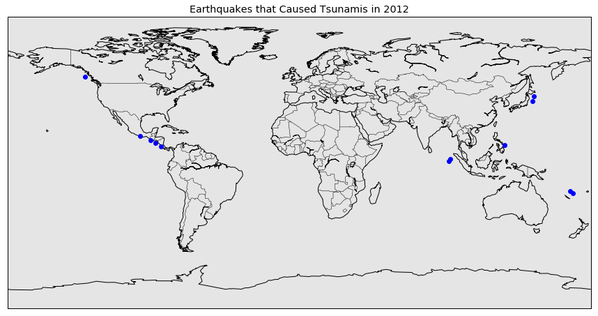
From the world map, all the earthquakes that caused the tsunamis were from areas near bodies of water.
min2012 = eqtsu2012['Magnitude'].min()
max2012 = eqtsu2012['Magnitude'].max()
print min2012, max2012
6.2 8.6
The magnitudes of earthquakes that caused tsunamis in 2012 ranges from 6.2 to 8.6
plt.figure(figsize=(10,10))
plt.hist(eqtsu2012['Magnitude'], bins = 5, alpha = 0.4)
plt.xlabel('Magnitude')
plt.ylabel('Frequency')
plt.title("Frequencies of Earthquakes that Caused Tsunamis in 2012")
plt.show()
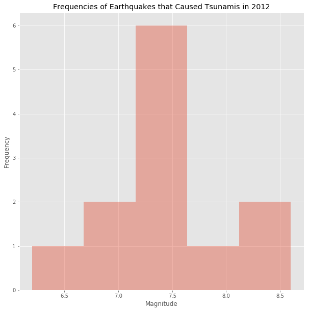
From the histogram, most of the earthquakes that caused tsunamis lies between the range of 7 to 7.5 degrees of magnitude.
Now I pick another year, 1997 to see how much and what degree magnitudes of earthquakes cause tsunamis and see if the results are similar or consistent with the year 2012.
eq1997 = earthquakes.loc[(earthquakes['Year'] == '1997')]
tsu1997 = tsu.loc[tsu[u'YEAR'] == 1997]
tsu1997
| ID | YEAR | MONTH | DAY | HOUR | MINUTE | COUNTRY | STATE | LOCATION_NAME | LATITUDE | LONGITUDE | |
|---|---|---|---|---|---|---|---|---|---|---|---|
| 2362 | 5416 | 1997 | 4.0 | 10.0 | NaN | NaN | HONDURAS | NaN | GULF OF FONSECA | 13.100 | -87.600 |
| 2364 | 2273 | 1997 | 4.0 | 21.0 | 12.0 | 2.0 | SOLOMON ISLANDS | NaN | SANTA CRUZ IS. VANUATU | -12.584 | 166.676 |
| 2365 | 2274 | 1997 | 7.0 | 9.0 | 19.0 | 24.0 | VENEZUELA | NaN | CARIACO-CUMANA | 10.598 | -63.486 |
| 2366 | 3034 | 1997 | 9.0 | 30.0 | 6.0 | 27.0 | JAPAN | NaN | S. OF HONSHU ISLAND | 31.959 | 141.878 |
| 2367 | 2275 | 1997 | 10.0 | 14.0 | 9.0 | 53.0 | TONGA | NaN | TONGA ISLANDS | -22.100 | -176.770 |
| 2368 | 2277 | 1997 | 12.0 | 5.0 | 11.0 | 26.0 | RUSSIA | NaN | KAMCHATKA | 54.841 | 162.035 |
| 2369 | 2278 | 1997 | 12.0 | 14.0 | 3.0 | 30.0 | RUSSIA | NaN | KAMCHATKA | 54.841 | 162.035 |
| 2370 | 2279 | 1997 | 12.0 | 26.0 | 8.0 | NaN | MONTSERRAT | NaN | WHITE RIVER VALLEY | 16.720 | -62.180 |
print len(tsu1997.index), len(eq1997.index)
8 456
In the year 1997, it looks like there are 2 tsunamis in April, 1 in July, 1 in September, 1 in October, and 3 in December with a total of 8 tsunamis. There are 456 earthquakes total in the year 1997.
tsu1997.loc[tsu1997[u'MONTH'] == 4]
| ID | YEAR | MONTH | DAY | HOUR | MINUTE | COUNTRY | STATE | LOCATION_NAME | LATITUDE | LONGITUDE | |
|---|---|---|---|---|---|---|---|---|---|---|---|
| 2362 | 5416 | 1997 | 4.0 | 10.0 | NaN | NaN | HONDURAS | NaN | GULF OF FONSECA | 13.100 | -87.600 |
| 2364 | 2273 | 1997 | 4.0 | 21.0 | 12.0 | 2.0 | SOLOMON ISLANDS | NaN | SANTA CRUZ IS. VANUATU | -12.584 | 166.676 |
eq1997.loc[(eq1997['Month'] == '4') & ((eq1997['Days'] == '10') | (eq1997['Days'] == '21'))]
| Date | Time | Latitude | Longitude | Magnitude | Depth | Year | Month | Days | ID | |
|---|---|---|---|---|---|---|---|---|---|---|
| 13495 | 4/21/1997 | 2:42:45 | -0.149 | 124.073 | 5.5 | 50.0 | 1997 | 4 | 21 | 13495 |
| 13496 | 4/21/1997 | 12:02:26 | -12.584 | 166.676 | 7.7 | 33.0 | 1997 | 4 | 21 | 13496 |
| 13497 | 4/21/1997 | 12:06:34 | -12.881 | 166.464 | 6.1 | 33.0 | 1997 | 4 | 21 | 13497 |
| 13498 | 4/21/1997 | 12:11:28 | -13.500 | 166.541 | 6.2 | 33.0 | 1997 | 4 | 21 | 13498 |
| 13499 | 4/21/1997 | 12:15:57 | -13.406 | 166.344 | 6.0 | 33.0 | 1997 | 4 | 21 | 13499 |
| 13500 | 4/21/1997 | 12:20:50 | -13.602 | 166.832 | 5.7 | 33.0 | 1997 | 4 | 21 | 13500 |
| 13501 | 4/21/1997 | 12:23:46 | -13.673 | 166.455 | 5.5 | 33.0 | 1997 | 4 | 21 | 13501 |
| 13502 | 4/21/1997 | 12:28:28 | -13.541 | 166.426 | 5.5 | 33.0 | 1997 | 4 | 21 | 13502 |
| 13503 | 4/21/1997 | 14:01:24 | -7.382 | 125.715 | 5.9 | 432.3 | 1997 | 4 | 21 | 13503 |
| 13504 | 4/21/1997 | 21:23:54 | -13.158 | 166.522 | 5.5 | 33.0 | 1997 | 4 | 21 | 13504 |
eq1997.loc[(eq1997['ID'] == 13496)]
| Date | Time | Latitude | Longitude | Magnitude | Depth | Year | Month | Days | ID | |
|---|---|---|---|---|---|---|---|---|---|---|
| 13496 | 4/21/1997 | 12:02:26 | -12.584 | 166.676 | 7.7 | 33.0 | 1997 | 4 | 21 | 13496 |
tsu1997.loc[tsu1997[u'MONTH'] == 7]
| ID | YEAR | MONTH | DAY | HOUR | MINUTE | COUNTRY | STATE | LOCATION_NAME | LATITUDE | LONGITUDE | |
|---|---|---|---|---|---|---|---|---|---|---|---|
| 2365 | 2274 | 1997 | 7.0 | 9.0 | 19.0 | 24.0 | VENEZUELA | NaN | CARIACO-CUMANA | 10.598 | -63.486 |
eq1997.loc[(eq1997['Month'] == '7') & (eq1997['Days'] == '9')]
| Date | Time | Latitude | Longitude | Magnitude | Depth | Year | Month | Days | ID | |
|---|---|---|---|---|---|---|---|---|---|---|
| 13600 | 7/9/1997 | 19:24:13 | 10.598 | -63.486 | 7.0 | 19.9 | 1997 | 7 | 9 | 13600 |
eq1997.loc[(eq1997['ID'] == 13600)]
| Date | Time | Latitude | Longitude | Magnitude | Depth | Year | Month | Days | ID | |
|---|---|---|---|---|---|---|---|---|---|---|
| 13600 | 7/9/1997 | 19:24:13 | 10.598 | -63.486 | 7.0 | 19.9 | 1997 | 7 | 9 | 13600 |
tsu1997.loc[tsu1997[u'MONTH'] == 9]
| ID | YEAR | MONTH | DAY | HOUR | MINUTE | COUNTRY | STATE | LOCATION_NAME | LATITUDE | LONGITUDE | |
|---|---|---|---|---|---|---|---|---|---|---|---|
| 2366 | 3034 | 1997 | 9.0 | 30.0 | 6.0 | 27.0 | JAPAN | NaN | S. OF HONSHU ISLAND | 31.959 | 141.878 |
eq1997.loc[(eq1997['Month'] == '9') & (eq1997['Days'] == '30')]
| Date | Time | Latitude | Longitude | Magnitude | Depth | Year | Month | Days | ID | |
|---|---|---|---|---|---|---|---|---|---|---|
| 13688 | 9/30/1997 | 6:27:25 | 31.959 | 141.878 | 6.2 | 10.0 | 1997 | 9 | 30 | 13688 |
eq1997.loc[(eq1997['ID'] == 13688)]
| Date | Time | Latitude | Longitude | Magnitude | Depth | Year | Month | Days | ID | |
|---|---|---|---|---|---|---|---|---|---|---|
| 13688 | 9/30/1997 | 6:27:25 | 31.959 | 141.878 | 6.2 | 10.0 | 1997 | 9 | 30 | 13688 |
tsu1997.loc[tsu1997[u'MONTH'] == 10]
| ID | YEAR | MONTH | DAY | HOUR | MINUTE | COUNTRY | STATE | LOCATION_NAME | LATITUDE | LONGITUDE | |
|---|---|---|---|---|---|---|---|---|---|---|---|
| 2367 | 2275 | 1997 | 10.0 | 14.0 | 9.0 | 53.0 | TONGA | NaN | TONGA ISLANDS | -22.1 | -176.77 |
eq1997.loc[(eq1997['Month'] == '10') & (eq1997['Days'] == '14')]
| Date | Time | Latitude | Longitude | Magnitude | Depth | Year | Month | Days | ID | |
|---|---|---|---|---|---|---|---|---|---|---|
| 13711 | 10/14/1997 | 9:53:18 | -22.101 | -176.772 | 7.8 | 167.3 | 1997 | 10 | 14 | 13711 |
| 13712 | 10/14/1997 | 15:23:10 | 42.962 | 12.892 | 5.5 | 10.0 | 1997 | 10 | 14 | 13712 |
eq1997.loc[(eq1997['ID'] == 13711)]
| Date | Time | Latitude | Longitude | Magnitude | Depth | Year | Month | Days | ID | |
|---|---|---|---|---|---|---|---|---|---|---|
| 13711 | 10/14/1997 | 9:53:18 | -22.101 | -176.772 | 7.8 | 167.3 | 1997 | 10 | 14 | 13711 |
tsu1997.loc[tsu1997[u'MONTH'] == 12]
| ID | YEAR | MONTH | DAY | HOUR | MINUTE | COUNTRY | STATE | LOCATION_NAME | LATITUDE | LONGITUDE | |
|---|---|---|---|---|---|---|---|---|---|---|---|
| 2368 | 2277 | 1997 | 12.0 | 5.0 | 11.0 | 26.0 | RUSSIA | NaN | KAMCHATKA | 54.841 | 162.035 |
| 2369 | 2278 | 1997 | 12.0 | 14.0 | 3.0 | 30.0 | RUSSIA | NaN | KAMCHATKA | 54.841 | 162.035 |
| 2370 | 2279 | 1997 | 12.0 | 26.0 | 8.0 | NaN | MONTSERRAT | NaN | WHITE RIVER VALLEY | 16.720 | -62.180 |
eq1997.loc[(eq1997['Month'] == '12') & ((eq1997['Days'] == '5') | (eq1997['Days'] == '14') | (eq1997['Days'] == '26'))]
| Date | Time | Latitude | Longitude | Magnitude | Depth | Year | Month | Days | ID | |
|---|---|---|---|---|---|---|---|---|---|---|
| 13784 | 12/5/1997 | 8:08:50 | 55.281 | 162.444 | 5.5 | 33.0 | 1997 | 12 | 5 | 13784 |
| 13785 | 12/5/1997 | 11:26:55 | 54.841 | 162.035 | 7.8 | 33.0 | 1997 | 12 | 5 | 13785 |
| 13786 | 12/5/1997 | 11:35:20 | 53.909 | 161.550 | 5.7 | 33.0 | 1997 | 12 | 5 | 13786 |
| 13787 | 12/5/1997 | 11:37:09 | 54.512 | 162.318 | 5.6 | 33.0 | 1997 | 12 | 5 | 13787 |
| 13788 | 12/5/1997 | 13:56:12 | 0.656 | 125.114 | 5.5 | 89.4 | 1997 | 12 | 5 | 13788 |
| 13789 | 12/5/1997 | 18:48:23 | 53.752 | 161.746 | 6.4 | 33.0 | 1997 | 12 | 5 | 13789 |
| 13790 | 12/5/1997 | 19:04:07 | 53.792 | 161.596 | 5.5 | 33.0 | 1997 | 12 | 5 | 13790 |
| 13806 | 12/14/1997 | 2:39:17 | -59.574 | -26.186 | 5.7 | 33.0 | 1997 | 12 | 14 | 13806 |
| 13807 | 12/14/1997 | 8:48:36 | -3.081 | 136.106 | 5.6 | 33.0 | 1997 | 12 | 14 | 13807 |
| 13808 | 12/14/1997 | 23:10:04 | -15.571 | -173.173 | 5.6 | 33.0 | 1997 | 12 | 14 | 13808 |
| 13829 | 12/26/1997 | 5:34:25 | -22.338 | -179.690 | 5.9 | 588.4 | 1997 | 12 | 26 | 13829 |
| 13830 | 12/26/1997 | 21:18:18 | 51.310 | 178.802 | 5.6 | 33.0 | 1997 | 12 | 26 | 13830 |
eq1997.loc[(eq1997['ID'] == 13785)]
| Date | Time | Latitude | Longitude | Magnitude | Depth | Year | Month | Days | ID | |
|---|---|---|---|---|---|---|---|---|---|---|
| 13785 | 12/5/1997 | 11:26:55 | 54.841 | 162.035 | 7.8 | 33.0 | 1997 | 12 | 5 | 13785 |
eqtsu1997 = earthquakes.loc[(earthquakes['ID'] == 13469) | (earthquakes['ID'] == 13600) | (earthquakes['ID'] == 13688) |
(earthquakes['ID'] == 13711) | (earthquakes['ID'] == 23785)]
eqtsu1997
| Date | Time | Latitude | Longitude | Magnitude | Depth | Year | Month | Days | ID | |
|---|---|---|---|---|---|---|---|---|---|---|
| 13469 | 4/2/1997 | 19:33:22 | 31.824 | 130.089 | 5.5 | 10.0 | 1997 | 4 | 2 | 13469 |
| 13600 | 7/9/1997 | 19:24:13 | 10.598 | -63.486 | 7.0 | 19.9 | 1997 | 7 | 9 | 13600 |
| 13688 | 9/30/1997 | 6:27:25 | 31.959 | 141.878 | 6.2 | 10.0 | 1997 | 9 | 30 | 13688 |
| 13711 | 10/14/1997 | 9:53:18 | -22.101 | -176.772 | 7.8 | 167.3 | 1997 | 10 | 14 | 13711 |
print float(len(eqtsu1997))/float(len(tsu1997)), float(len(eqtsu1997))/float(len(eq1997))
0.5 0.00877192982456
About 50% of tsunamis were caused by earthquakes in 1997 and about 1% of earthquakes that year caused tsunamis.
plt.figure(figsize=(15,10))
displaymap1997 = Basemap(llcrnrlon=-180,llcrnrlat=-90,urcrnrlon=180,urcrnrlat=90)
displaymap1997.drawmapboundary()
displaymap1997.drawcountries()
displaymap1997.drawcoastlines()
longitude1997 = eqtsu1997[['Longitude']].values.tolist()
for i in range(0, len(longitude1997)):
longitude1997[i] = float(longitude1997[i][0])
latitude1997 = eqtsu1997[['Latitude']].values.tolist()
for i in range(0, len(latitude1997)):
latitude1997[i] = float(latitude1997[i][0])
lons1997,lats1997 = displaymap(longitude1997, latitude1997)
displaymap1997.plot(lons1997, lats1997, 'bo', color = "blue")
[<matplotlib.lines.Line2D at 0xb6ece10>]
plt.title("Earthquakes that Caused Tsunamis in 1997")
plt.show()
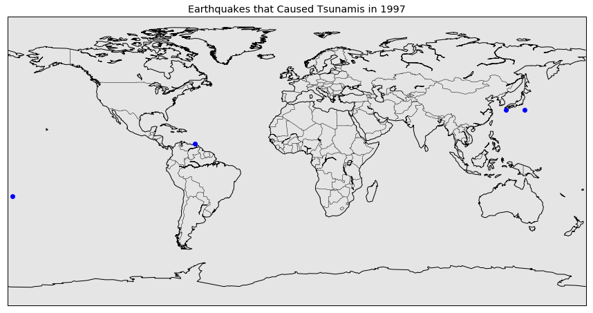
Again, all the earthquakes that caused tsunamis happened near or in bodies of water so it's consistent with the observation from the world map for 2012. I will not provide a histogram for this year as there are only 4 earthquakes that caused tsunamis this year.
min1997 = eqtsu1997['Magnitude'].min()
max1997 = eqtsu1997['Magnitude'].max()
print min1997, max1997
5.5 7.8
The range of earthquakes that caused tsunamis for 1997 is between 5.5 and 7.8.
Now I want to combine the datasets of earthquakes that cause tsunamis I have gotten in the previous parts to see how that fits in with the observations I have obtained so far.
eqcom = earthquakes.loc[(earthquakes['Year'] == '1997') | (earthquakes['Year'] == '2012')]
tsucom = tsu.loc[(tsu[u'YEAR'] == 1997) | (tsu[u'YEAR'] == 2012)]
frames = [eqtsu1997, eqtsu2012]
eqtsucom = pd.concat(frames)
eqtsucom
| Date | Time | Latitude | Longitude | Magnitude | Depth | Year | Month | Days | ID | |
|---|---|---|---|---|---|---|---|---|---|---|
| 13469 | 4/2/1997 | 19:33:22 | 31.824 | 130.089 | 5.5 | 10.0 | 1997 | 4 | 2 | 13469 |
| 13600 | 7/9/1997 | 19:24:13 | 10.598 | -63.486 | 7.0 | 19.9 | 1997 | 7 | 9 | 13600 |
| 13688 | 9/30/1997 | 6:27:25 | 31.959 | 141.878 | 6.2 | 10.0 | 1997 | 9 | 30 | 13688 |
| 13711 | 10/14/1997 | 9:53:18 | -22.101 | -176.772 | 7.8 | 167.3 | 1997 | 10 | 14 | 13711 |
| 21144 | 2/2/2012 | 13:34:41 | -17.827 | 167.133 | 7.1 | 23.0 | 2012 | 2 | 2 | 21144 |
| 21192 | 3/14/2012 | 9:08:35 | 40.887 | 144.944 | 6.9 | 12.0 | 2012 | 3 | 14 | 21192 |
| 21203 | 3/20/2012 | 18:02:47 | 16.493 | -98.231 | 7.4 | 20.0 | 2012 | 3 | 20 | 21203 |
| 21219 | 4/11/2012 | 8:38:37 | 2.327 | 93.063 | 8.6 | 20.0 | 2012 | 4 | 11 | 21219 |
| 21224 | 4/11/2012 | 10:43:11 | 0.802 | 92.463 | 8.2 | 25.1 | 2012 | 4 | 11 | 21224 |
| 21238 | 4/14/2012 | 22:05:26 | -18.972 | 168.741 | 6.2 | 11.0 | 2012 | 4 | 14 | 21238 |
| 21405 | 8/27/2012 | 4:37:19 | 12.139 | -88.590 | 7.3 | 28.0 | 2012 | 8 | 27 | 21405 |
| 21411 | 8/31/2012 | 12:47:33 | 10.811 | 126.638 | 7.6 | 28.0 | 2012 | 8 | 31 | 21411 |
| 21418 | 9/5/2012 | 14:42:08 | 10.085 | -85.315 | 7.6 | 35.0 | 2012 | 9 | 5 | 21418 |
| 21477 | 10/28/2012 | 3:04:09 | 52.788 | -132.101 | 7.8 | 14.0 | 2012 | 10 | 28 | 21477 |
| 21493 | 11/7/2012 | 16:35:47 | 13.988 | -91.895 | 7.4 | 24.0 | 2012 | 11 | 7 | 21493 |
| 21530 | 12/7/2012 | 8:18:23 | 37.890 | 143.949 | 7.3 | 31.0 | 2012 | 12 | 7 | 21530 |
print float(len(eqtsucom))/float(len(tsucom)), float(len(eqtsucom))/float(len(eqcom))
0.727272727273 0.0177580466149
When averaged, approximately 72% of tsunamis are caused by earthquakes and about 2% of those earthquakes cause tsunamis.
plt.figure(figsize=(15,10))
displaymapcom = Basemap(llcrnrlon=-180,llcrnrlat=-90,urcrnrlon=180,urcrnrlat=90)
displaymapcom.drawmapboundary()
displaymapcom.drawcountries()
displaymapcom.drawcoastlines()
longitudecom = eqtsucom[['Longitude']].values.tolist()
for i in range(0, len(longitudecom)):
longitudecom[i] = float(longitudecom[i][0])
latitudecom = eqtsucom[['Latitude']].values.tolist()
for i in range(0, len(latitudecom)):
latitudecom[i] = float(latitudecom[i][0])
lonscom,latscom = displaymap(longitudecom, latitudecom)
displaymapcom.plot(lonscom, latscom, 'bo', color = "blue")
[<matplotlib.lines.Line2D at 0xb707048>]
plt.title("Earthquakes that Caused Tsunamis in Both Years")
plt.show()
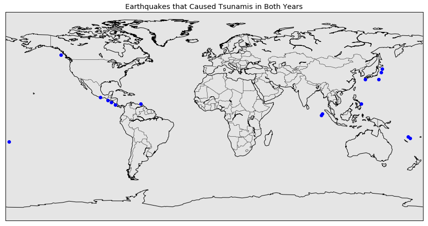
All the earthquakes that cause tsunamis are located near or in bodies of water. This has been a consistent observation so far.
mincom = eqtsucom['Magnitude'].min()
maxcom = eqtsucom['Magnitude'].max()
print mincom, maxcom
5.5 8.6
The range of earthquakes that cause earthquakes for this set of observations is between 5.5 o 8.6 degrees of magnitude.
plt.figure(figsize=(10,10))
plt.hist(eqtsucom['Magnitude'], bins = 5, alpha = 0.4)
plt.xlabel('Magnitude')
plt.ylabel('Frequency')
plt.title("Frequencies of Earthquakes that Caused Tsunamis in Combined Dataset")
plt.show()
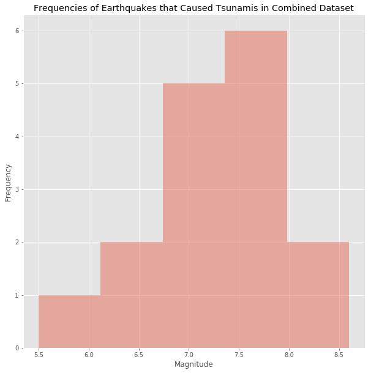
In the histogram, it is shown that a majority of tsunamis are caused by earthquakes between 7 to 8 degrees of magnitude which is consistent with the observation I obtained in the 2012 dataset.
In conclusion, most tsunamis are caused by earthquakes located near or in bodies of water on the world map but about less than 5% of earthquakes in the world actually cause tsunamis itself. I have found that the majority of earthquakes that cause tsunamis have a magnitude between 5 and 9 which are the big earthquakes. The samples I have taken are not representative of the whole dataset because the dataset could not be merged together but I believe that the results would be more accurate if there is more data that had been analyzed and if there is a larger sample for the data.
Adding onto the discussion of how earthquakes affect tsunamis, we will also discuss how earthquakes may affect volcanic eruptions. There are approximetely 1.5k active volcanos on earth. However, I will focus on connecting earthquakes and volcanic eruptions to stay within the scope of the class, as I am not a geophysicist.
I used data from NOAA, a website from Oregonstate.edu with the list of volcanos with their latitude and longitude, volcano and plate boundary shapefiles from ArcMap (Esri), as well as data from volcanodiscovery.org to find data concerning recent earthquakes near volcanos.
import requests
from lxml import html
from mpl_toolkits.basemap import Basemap
import numpy as np
import pandas as pd
import matplotlib.pyplot as plt
Let's plot all 1500 volcanos on a map to see where most of them are located. Due to the difficulty to acquire a reasonable dataset of volcanos, besides a shapefile from Arcmap, we will scrape from a website that indicates the Latitude and longiude of all the volcanos to make plotting easy. We will also plot the volcanos on a basemap by the size of the volcano, via it's elevation height in meters.
page = requests.get('http://volcano.oregonstate.edu/oldroot/volcanoes/alpha.html')
tree = html.fromstring(page.content)
tables = tree.xpath('//table')
volcano_data = []
for volc in range(4, len(tables)):
df = pd.read_html(html.tostring(tables[volc]), header=0)[0]
volcano_data.append(df)
df_volc = pd.concat(volcano_data, ignore_index=True)
Let's look at a small snippet of the volcano dataset that was scraped. We will take note of the main observations of this dataset.
df_volc.head(10)
| Name | Location | Type | Latitude | Longitude | Elevation (m) | |
|---|---|---|---|---|---|---|
| 0 | Abu | Honshu-Japan | Shield volcanoes | 34.50 | 131.60 | 641.0 |
| 1 | Acamarachi | Chile-N | Stratovolcano | -23.30 | -67.62 | 6046.0 |
| 2 | Acatenango | Guatemala | Stratovolcano | 14.50 | -90.88 | 3976.0 |
| 3 | Acigöl-Nevsehir | Turkey | Caldera | 38.57 | 34.52 | 1689.0 |
| 4 | Adams | US-Washington | Stratovolcano | 46.21 | -121.49 | 3742.0 |
| 5 | Adams Seamount | Pacific-C | Submarine volcano | -25.37 | -129.27 | -39.0 |
| 6 | Adatara | Honshu-Japan | Stratovolcanoes | 37.64 | 140.29 | 1718.0 |
| 7 | Adwa | Ethiopia | Stratovolcano | 10.07 | 40.84 | 1733.0 |
| 8 | Afderà | Ethiopia | Stratovolcano | 13.08 | 40.85 | 1295.0 |
| 9 | Agrigan | Mariana Is-C Pacific | Stratovolcano | 18.77 | 145.67 | 965.0 |
import pandas as pd
from mpl_toolkits.basemap import Basemap
import matplotlib.pyplot as plt1
import matplotlib as mpl
import shapefile
from mpl_toolkits.basemap import Basemap
import geopandas as gp
import os as osf
osf.chdir('C:\Users\jenat\\Documents\\ringoffire\\new')
volc = gp.GeoDataFrame.from_file('volcs.shp')
plt1.figure(figsize = (20, 12))
y = volc.LATX
x = volc.LONGX
map1 = Basemap()
map1.readshapefile('plate', 'plate')
map1.drawmapboundary(fill_color = 'lightskyblue')
map1.fillcontinents(color = 'lavender',lake_color = 'aqua')
map1.drawcountries()
map1.drawcoastlines()
volc_info = map1.readshapefile('volc1', 'volcs')
x1,y1 = map1(x,y)
map1.scatter(x1,y1,c = 'red',marker = "o",alpha = 1.0)
plt1.title("Map of Volcanos and Plate Boundaries", fontsize = 25)
plt1.show()
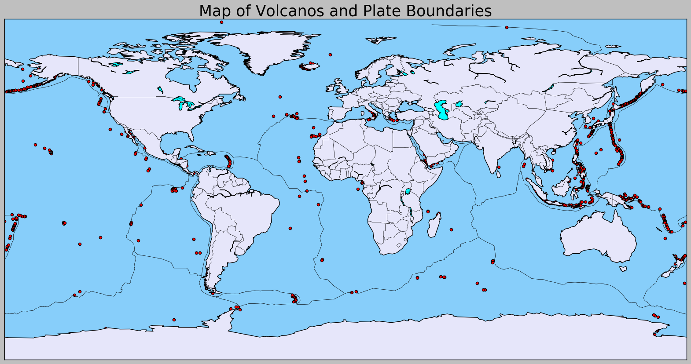
Using two shape files (one for plate bounaries, the other of the world's volcanos), we see that majority of the volcanos are very close to plate boundaries, that or they are along the tetonic plate boundaries.
However, besides plotting the volcanos on a map, let us take it a step further and plot volcanos as well as data that indicates whether one of these volcanos, had an eruption that was associated with an earthquake. We will use two datasets to answer this question. The second dataset with the earthquake information mainly looks at volcano eruptions from 1790 to the present. I have decided to look at world volcanos for that data and not focus on a particular region of the world.
import os
import pandas as pd
from mpl_toolkits.basemap import Basemap
import numpy as np
import pandas as pd
import matplotlib.pyplot as plt
os.chdir('C:\Users\jenat\Documents')
#second dataset
data = pd.read_csv("new_world_data_results_up1.csv")
data
| Year | Month | Day | TSU | EQ | Name | Location | Country | Latitude | Longitude | Elevation | Type | Status | |
|---|---|---|---|---|---|---|---|---|---|---|---|---|---|
| 0 | NaN | NaN | NaN | NaN | NaN | NaN | NaN | NaN | NaN | NaN | NaN | NaN | NaN |
| 1 | -1610.0 | NaN | NaN | TSU | EQ | Santorini | Greece | Greece | 36.404 | 25.396 | 329.0 | Shield volcano | Historical |
| 2 | 766.0 | 7.0 | 20.0 | TSU | EQ | Sakura-jima | Kyushu-Japan | Japan | 31.580 | 130.670 | 1117.0 | Stratovolcano | Historical |
| 3 | 1169.0 | 2.0 | 4.0 | TSU | EQ | Etna | Italy | Italy | 37.734 | 15.004 | 3350.0 | Stratovolcano | Historical |
| 4 | 1565.0 | 8.0 | NaN | NaN | EQ | Pacaya | Guatemala | Guatemala | 14.381 | -90.601 | 2552.0 | Complex volcano | Historical |
| 5 | 1600.0 | 2.0 | 19.0 | NaN | EQ | Huaynaputina | Peru | Peru | -16.608 | -70.850 | 4850.0 | Stratovolcano | Historical |
| 6 | 1631.0 | 2.0 | 14.0 | NaN | EQ | Dama Ali | Africa-NE | Ethiopia | 11.280 | 41.630 | 1068.0 | Shield volcano | Historical |
| 7 | 1631.0 | 12.0 | 16.0 | TSU | EQ | Vesuvius | Italy | Italy | 40.821 | 14.426 | 1281.0 | Complex volcano | Historical |
| 8 | 1640.0 | 7.0 | 31.0 | TSU | EQ | Komaga-take | Hokkaido-Japan | Japan | 42.070 | 140.680 | 1140.0 | Stratovolcano | Historical |
| 9 | 1659.0 | 9.0 | 30.0 | NaN | EQ | San Salvador | El Salvador | El Salvador | 13.736 | -89.286 | 1893.0 | Stratovolcano | Historical |
| 10 | 1669.0 | 3.0 | 11.0 | NaN | EQ | Etna | Italy | Italy | 37.734 | 15.004 | 3350.0 | Stratovolcano | Historical |
| 11 | 1679.0 | 9.0 | 21.0 | NaN | EQ | Zukur | Red Sea | Yemen | 14.020 | 42.750 | 624.0 | Shield volcano | Holocene |
| 12 | 1693.0 | 1.0 | 9.0 | NaN | EQ | Etna | Italy | Italy | 37.734 | 15.004 | 3350.0 | Stratovolcano | Historical |
| 13 | 1707.0 | 12.0 | 16.0 | NaN | EQ | Fuji | Honshu-Japan | Japan | 35.350 | 138.730 | 3776.0 | Stratovolcano | Historical |
| 14 | 1716.0 | 9.0 | 24.0 | TSU | EQ | Taal | Luzon-Philippines | Philippines | 14.002 | 120.993 | 400.0 | Stratovolcano | Historical |
| 15 | 1741.0 | 8.0 | 23.0 | TSU | EQ | Oshima-Oshima | Hokkaido-Japan | Japan | 41.500 | 139.370 | 737.0 | Stratovolcano | Historical |
| 16 | 1749.0 | 8.0 | 11.0 | TSU | EQ | Taal | Luzon-Philippines | Philippines | 14.002 | 120.993 | 400.0 | Stratovolcano | Historical |
| 17 | 1754.0 | 5.0 | 13.0 | TSU | EQ | Taal | Luzon-Philippines | Philippines | 14.002 | 120.993 | 400.0 | Stratovolcano | Historical |
| 18 | 1757.0 | 7.0 | 9.0 | NaN | EQ | San Jorge | Azores | Portugal | 38.650 | -28.080 | 1053.0 | Fissure vent | Historical |
| 19 | 1792.0 | 5.0 | 21.0 | TSU | EQ | Unzen | Kyushu-Japan | Japan | 32.750 | 130.300 | 1500.0 | Complex volcano | Historical |
| 20 | 1820.0 | 3.0 | 1.0 | TSU | EQ | Westdahl | Aleutian Is | United States | 54.520 | -164.650 | 1654.0 | Stratovolcano | Historical |
| 21 | 1827.0 | 6.0 | 27.0 | TSU | EQ | Avachinsky | Kamchatka | Russia | 53.255 | 158.830 | 2741.0 | Stratovolcano | Historical |
| 22 | 1837.0 | 9.0 | NaN | TSU | EQ | Peuet Sague | Sumatra | Indonesia | 4.914 | 96.329 | 2801.0 | Complex volcano | Historical |
| 23 | 1840.0 | 2.0 | 2.0 | TSU | EQ | Gamalama | Halmahera-Indonesia | Indonesia | 0.800 | 127.325 | 1715.0 | Stratovolcano | Historical |
| 24 | 1845.0 | 2.0 | 8.0 | TSU | EQ | Soputan | Sulawesi-Indonesia | Indonesia | 1.108 | 124.725 | 1784.0 | Stratovolcano | Historical |
| 25 | 1857.0 | 4.0 | 17.0 | TSU | EQ | Umboi | New Guinea-NE of | Papua New Guinea | -5.589 | 147.875 | 1548.0 | Complex volcano | Holocene |
| 26 | 1863.0 | 8.0 | 17.0 | TSU | EQ | Yasur | Vanuatu-SW Pacific | Vanuatu | -19.520 | 169.425 | 361.0 | Stratovolcano | Historical |
| 27 | 1868.0 | 4.0 | 3.0 | TSU | EQ | Mauna Loa | Hawaiian Is | United States | 19.475 | -155.608 | 4170.0 | Shield volcano | Historical |
| 28 | 1868.0 | 9.0 | 5.0 | TSU | EQ | Etna | Italy | Italy | 37.734 | 15.004 | 3350.0 | Stratovolcano | Historical |
| 29 | 1871.0 | 4.0 | 30.0 | TSU | EQ | Camiguin | Mindanao-Philippines | Philippines | 9.203 | 124.673 | 1332.0 | Stratovolcano | Historical |
| 30 | 1877.0 | 2.0 | 14.0 | TSU | EQ | Mauna Loa | Hawaiian Is | United States | 19.475 | -155.608 | 4170.0 | Shield volcano | Historical |
| 31 | 1878.0 | 2.0 | 11.0 | TSU | EQ | Yasur | Vanuatu-SW Pacific | Vanuatu | -19.520 | 169.425 | 361.0 | Stratovolcano | Historical |
| 32 | 1878.0 | 8.0 | 29.0 | TSU | EQ | Okmok | Aleutian Is | United States | 53.420 | -168.130 | 1073.0 | Shield volcano | Historical |
| 33 | 1885.0 | 5.0 | 25.0 | NaN | EQ | Purace | Colombia | Colombia | 2.320 | -76.400 | 4650.0 | Stratovolcano | Historical |
| 34 | 1889.0 | 9.0 | 6.0 | TSU | EQ | Banua Wuhu | Sangihe Is-Indonesia | Indonesia | 3.138 | 125.491 | -5.0 | Submarine volcano | Historical |
| 35 | 1901.0 | 8.0 | 9.0 | TSU | EQ | Epi | Vanuatu-SW Pacific | Vanuatu | -16.680 | 168.370 | 833.0 | Stratovolcano | Historical |
| 36 | 1909.0 | 4.0 | 28.0 | NaN | EQ | Cameroon, Mt. | Africa-W | Cameroon | 4.203 | 9.170 | 4095.0 | Stratovolcano | Historical |
| 37 | 1911.0 | 1.0 | 30.0 | TSU | EQ | Taal | Luzon-Philippines | Philippines | 14.002 | 120.993 | 400.0 | Stratovolcano | Historical |
| 38 | 1913.0 | 3.0 | 14.0 | TSU | EQ | Awu | Sangihe Is-Indonesia | Indonesia | 3.670 | 125.500 | 1320.0 | Stratovolcano | Historical |
| 39 | 1914.0 | 1.0 | 12.0 | TSU | EQ | Sakura-jima | Kyushu-Japan | Japan | 31.580 | 130.670 | 1117.0 | Stratovolcano | Historical |
| 40 | 1917.0 | 6.0 | 7.0 | NaN | EQ | San Salvador | El Salvador | El Salvador | 13.736 | -89.286 | 1893.0 | Stratovolcano | Historical |
| 41 | 1933.0 | 1.0 | 8.0 | TSU | EQ | Kharimkotan | Kuril Is | Russia | 49.120 | 154.508 | 1145.0 | Stratovolcano | Historical |
| 42 | 1937.0 | 5.0 | 29.0 | TSU | EQ | Rabaul | New Britain-SW Pac | Papua New Guinea | -4.271 | 152.203 | 688.0 | Pyroclastic shield | Historical |
| 43 | 1951.0 | 8.0 | 3.0 | TSU | EQ | Cosiguina | Nicaragua | Nicaragua | 12.980 | -87.570 | 872.0 | Stratovolcano | Historical |
| 44 | 1957.0 | 3.0 | 11.0 | NaN | EQ | Vsevidof | Aleutian Is | United States | 53.130 | -168.680 | 2149.0 | Stratovolcano | Historical |
| 45 | 1960.0 | 5.0 | 25.0 | TSU | EQ | Puyehue | Chile-C | Chile | -40.590 | -72.117 | 2236.0 | Stratovolcano | Holocene |
| 46 | 1963.0 | 5.0 | 16.0 | NaN | EQ | Agung | Lesser Sunda Is | Indonesia | -8.342 | 115.508 | 3142.0 | Stratovolcano | Historical |
| 47 | 1975.0 | 11.0 | 29.0 | TSU | EQ | Kilauea | Hawaiian Is | United States | 19.425 | -155.292 | 1222.0 | Shield volcano | Historical |
| 48 | 1980.0 | 5.0 | 18.0 | TSU | EQ | St. Helens | US-Washington | United States | 46.200 | -122.180 | 2549.0 | Stratovolcano | Historical |
| 49 | 1982.0 | 3.0 | 28.0 | NaN | EQ | Chichon, El | Mexico | Mexico | 17.360 | -93.228 | 1150.0 | Tuff cone | Historical |
| 50 | 1983.0 | 10.0 | 3.0 | NaN | EQ | Miyake-jima | Izu Is-Japan | Japan | 34.080 | 139.530 | 815.0 | Stratovolcano | Historical |
| 51 | 1987.0 | 12.0 | 1.0 | NaN | EQ | Sirung | Lesser Sunda Is | Indonesia | -8.510 | 124.148 | 862.0 | Complex volcano | Historical |
| 52 | 1991.0 | 6.0 | 15.0 | NaN | EQ | Pinatubo | Luzon-Philippines | Philippines | 15.130 | 120.350 | 1486.0 | Stratovolcano | Historical |
| 53 | 2000.0 | 6.0 | 27.0 | TSU | EQ | Miyake-jima | Izu Is-Japan | Japan | 34.080 | 139.530 | 815.0 | Stratovolcano | Historical |
| 54 | 2002.0 | 8.0 | 28.0 | NaN | EQ | Etna | Italy | Italy | 37.734 | 15.004 | 3350.0 | Stratovolcano | Historical |
| 55 | 2010.0 | 5.0 | 29.0 | TSU | EQ | Sarigan | Mariana Is-C Pacific | United States | 16.708 | 145.780 | 538.0 | Stratovolcano | Holocene |
def plot_map2(lons, lats, elevations, llcrnrlat = -80, urcrnrlat = 90, llcrnrlon = -180, urcrnrlon = 180,resolution = 'i', projection='mill', lat_0 = 39.5, lon_0 = 1,min_marker_size=5):
bins = np.linspace(0, elevations.max(), 10)
marker_sizes = np.digitize(elevations, bins) + min_marker_size
m2 = Basemap(projection=projection, llcrnrlat=llcrnrlat, urcrnrlat=urcrnrlat, llcrnrlon=llcrnrlon, urcrnrlon=urcrnrlon, resolution=resolution)
m2.drawcountries()
m2.drawmapboundary(fill_color='lightskyblue')
m2.fillcontinents(color = '#ddaa66',lake_color='aqua')
m2.drawcoastlines()
for lon, lat, m2size in zip(lons, lats, marker_sizes):
x, y = m2(lon, lat)
m2.plot(x, y, 'bs', markersize=m2size, alpha=.7, zorder=4)
return m2
def plot_map1(lons, lats, elevations, llcrnrlat=-80, urcrnrlat=90, llcrnrlon=-180, urcrnrlon=180,resolution='i', projection='mill', lat_0 = 39.5, lon_0 = 1,min_marker_size=2):
bins = np.linspace(0, elevations.max(), 10)
marker_sizes = np.digitize(elevations, bins) + min_marker_size
m = Basemap(projection=projection, llcrnrlat=llcrnrlat, urcrnrlat=urcrnrlat, llcrnrlon=llcrnrlon, urcrnrlon=urcrnrlon, resolution=resolution)
m.drawcountries()
m.drawmapboundary(fill_color='lightskyblue')
m.fillcontinents(color = '#ddaa66',lake_color='aqua')
m.drawcoastlines()
for lon, lat, msize in zip(lons, lats, marker_sizes):
x, y = m(lon, lat)
m.plot(x, y, '^r', markersize=msize, alpha=.7, zorder=4)
return m
plt.figure(figsize=(60, 30))
m2 = plot_map2(data['Longitude'], data['Latitude'], data['Elevation'], min_marker_size=35)
m = plot_map1(df_volc['Longitude'], df_volc['Latitude'], df_volc['Elevation (m)'], min_marker_size=10)
plt.title('Volcano Eruptions with Associated Earthquakes', color='#000000', fontsize=50)
plt.show()
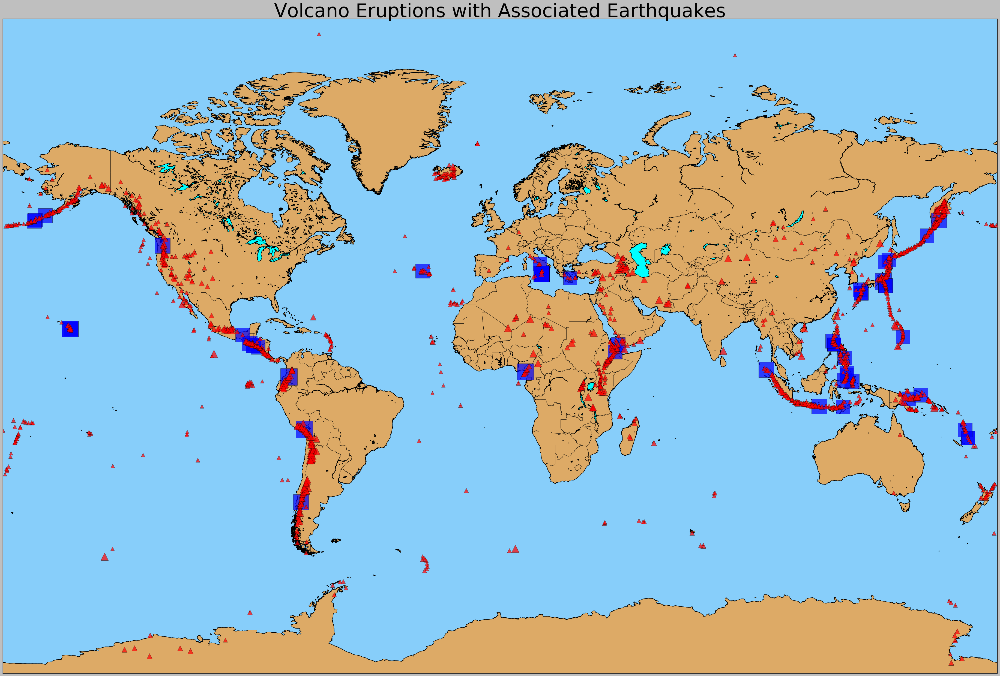
In the original NOAA dataset, there are 797 volcanic eruption observations, and 55 of them are eruptions associated with earthquakes. Taking this into account from this dataset (Volcanic eruptions from 1790-2016), 6.9% of the volcanic eruptions from the NOAA dataset, had an association with an earthquake.
The red triangles indicate the volcanos, and the blue squares indicate the volcanos who had an association with an earthquake prior to its eruption. Out of 1500 volcanos, there were about 55 volcanic eruptions that had this association. Many have these occurred in the 20th century. We also see that the majority of these earthquake and volcano association have happened along the ring of fire, which stretches along the Eastern edge of Asia, down to New Zealand, as well as from Alaska down to South America.
Let's examine the different types of volcanos as well as the top 10 countries that had the most volcanic eruptions with associated earthquakes. Is there a particular region that had the most volcano eruptions?
import matplotlib.pyplot as plt; plt.rcdefaults()
import numpy as np
import matplotlib.pyplot as plt
objects = ('Stratovolcano', 'Shield Volcano', 'Complex Volcano', 'Pyroclastic shield', 'Tuff cone', 'Fissure vent','Submarine volcano')
y_pos = np.arange(len(objects))
performance = [38,7,6,1,1,1,1]
plt.barh(y_pos, performance, align='center', alpha=0.5)
plt.yticks(y_pos, objects)
plt.xlabel('Amount')
plt.title('Variation of Volcano Types with Associated Earthquakes')
plt.show()
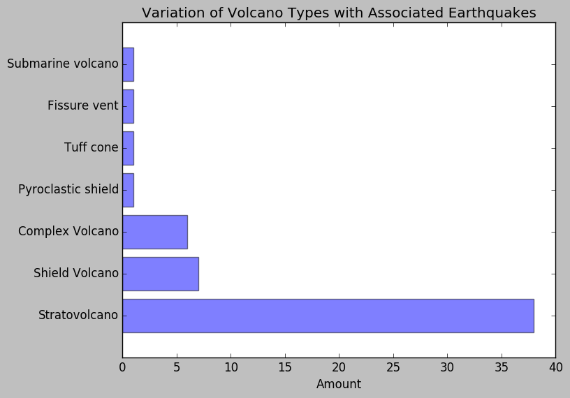
We see that stratovolcanos (for instance Mount St.Helens, is a stratovolcano) had the overall highest frequency of volcanic eruptions, and by a large proportion.
data['Country'].value_counts()[:10].plot(kind = 'barh', title = 'Top 10 Countries with Volcanic Eruptions with Associated Earthquakes')
plt.show()
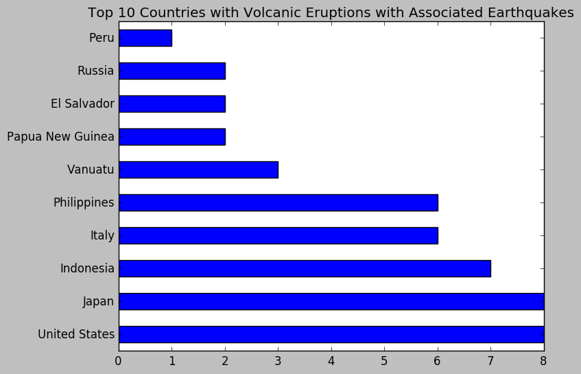
We see that the United States and Japan have an equal amount of volcanic eruptions that had associations with earthquakes.
As stated before, scientists still are debating whether earthquakes and volcanic eruptions are connected or not, and there is a lack of information available that proved that the two are substantially linked to one or the other. However, I have found enough data indicating that earthquakes do occur near volcanos, which can suggest that it is possible for earthquakes and volcanos to be somewhat linked.
import os
os.chdir('C:\Users\jenat\\Documents\\ringoffire')
import pandas as pd
import numpy as np
from mpl_toolkits.basemap import Basemap
import matplotlib.pyplot as plt
import matplotlib as mpl
os.chdir('C:\Users\jenat\Documents\\ringoffire')
eqdata = pd.read_csv('earthquakesdata.csv')#dataset
eqdata1 = eqdata.convert_objects(convert_numeric=True)
C:\Users\jenat\Anaconda2\lib\site-packages\ipykernel\__main__.py:3: FutureWarning: convert_objects is deprecated. Use the data-type specific converters pd.to_datetime, pd.to_timedelta and pd.to_numeric.
app.launch_new_instance()
eqdata1
| Time | Mag | Depth | Location | Latitude | Longitude | |
|---|---|---|---|---|---|---|
| 0 | Sat, 18 ar 19:47 UTC | 2.3 | 13.2 | - 3 SSW of Volcano, Hawaii | 19.4000 | -155.2500 |
| 1 | Sat, 18 ar 14:48 UTC | 1.9 | 17.6 | 11 SSW fro Corinth | 19.3975 | -155.2522 |
| 2 | Sat, 18 ar 13:57 UTC | 1.6 | 2.2 | 4.6 SSW of Her�ubrei� | 37.7902 | 14.9158 |
| 3 | Sat, 18 ar 13:13 UTC | 2.3 | 1 | 016 S 66? W of Wao (Lanao Del Sur) | 37.8527 | 22.8490 |
| 4 | Sat, 18 ar 12:57 UTC | 2.2 | 27.7 | - 5 NNW of Volcano, Hawaii | 65.1360 | -16.3860 |
| 5 | Sat, 18 ar 12:29 UTC | 1.8 | 1.8 | - 5 WSW of Volcano, Hawaii | 7.5900 | 124.6200 |
| 6 | Sat, 18 ar 12:08 UTC | 1.6 | 0.7 | 2.7 ESE of Go�abunga | 19.4768 | -155.2662 |
| 7 | Sat, 18 ar 11:41 UTC | 1.8 | 4 | 3.7 SW of Her�ubrei� | 19.4047 | -155.2835 |
| 8 | Sat, 18 ar 11:27 UTC | 3 | 17 | 012 S 87? W of Wao (Lanao Del Sur)I FELT IT | 19.4372 | -155.6165 |
| 9 | Sat, 18 ar 11:20 UTC | 1.5 | 4 | 4.1 SW of Her�ubrei� | 63.6350 | -19.1960 |
| 10 | Sat, 18 ar 10:51 UTC | 4.7 | 10 | Northern Suatra, IndonesiaI FELT IT | 65.1510 | -16.4060 |
| 11 | Sat, 18 ar 10:43 UTC | 1.6 | 3.3 | 3.8 SW of Her�ubrei� | 7.6400 | 124.6500 |
| 12 | Sat, 18 ar 10:07 UTC | 2.3 | 3.1 | 3.1 SW of Her�ubrei� | 65.1460 | -16.4070 |
| 13 | Sat, 18 ar 10:07 UTC | 1.6 | 6.4 | 4.4 SW of Her�ubrei� | 3.4200 | 98.4800 |
| 14 | Sat, 18 ar 09:51 UTC | 1.6 | 7.7 | 5.7 SW of Her�ubrei� | 65.1500 | -16.4070 |
| 15 | Sat, 18 ar 09:28 UTC | 1.6 | 4.8 | 5.3 SW of Her�ubrei� | 65.1570 | -16.4030 |
| 16 | Sat, 18 ar 09:25 UTC | 2 | 4.8 | 5.3 SW of Her�ubrei� | 65.1460 | -16.4140 |
| 17 | Sat, 18 ar 09:25 UTC | 1.5 | 9.2 | 5.1 N of Her�ubrei�art�gl | 65.1370 | -16.4340 |
| 18 | Sat, 18 ar 08:59 UTC | 1.5 | 7.6 | 3.1 N of B�r�arbunga | 65.1370 | -16.4200 |
| 19 | Sat, 18 ar 08:44 UTC | 1.6 | 3.8 | - 11 WNW of Calipatria, CA | 65.1350 | -16.4140 |
| 20 | Sat, 18 ar 08:40 UTC | 2.1 | 3.4 | 4.0 SW of Her�ubrei� | 65.1330 | -16.3990 |
| 21 | Sat, 18 ar 08:26 UTC | 2.5 | 4 | SOUTHERN CALIFORNIA | 64.6680 | -17.5160 |
| 22 | Sat, 18 ar 08:26 UTC | 1.5 | 4.8 | 4.6 SW of Her�ubrei� | 33.1607 | -115.6203 |
| 23 | Sat, 18 ar 06:47 UTC | 1.5 | 6.6 | 4.8 SW of Her�ubrei� | 65.1480 | -16.4070 |
| 24 | Sat, 18 ar 06:22 UTC | 2.9 | 7.1 | 5.1 SW of Her�ubrei�I FELT IT | 33.1500 | -115.6300 |
| 25 | Sat, 18 ar 06:22 UTC | 2.1 | 3.3 | 5.0 SW of Her�ubrei� | 65.1440 | -16.4170 |
| 26 | Sat, 18 ar 05:28 UTC | 2.4 | 5.1 | 4.9 SW of Her�ubrei� | 65.1450 | -16.4230 |
| 27 | Sat, 18 ar 05:28 UTC | 2.2 | 5.1 | 4.9 SW of Her�ubrei� | 65.1410 | -16.4240 |
| 28 | Sat, 18 ar 05:05 UTC | 2 | 26.4 | - 5 NW of Volcano, Hawaii | 65.1420 | -16.4240 |
| 29 | Sat, 18 ar 04:37 UTC | 1.5 | 3.6 | 3.8 SW of Her�ubrei� | 65.1440 | -16.4250 |
| ... | ... | ... | ... | ... | ... | ... |
| 826 | Thu, 2 Feb 18:04 UTC | 3 | 7 | SOUTHERN GREECE | -39.2588 | 173.9287 |
| 827 | Thu, 2 Feb 12:47 UTC | 3.3 | 8 | 16 al Norte de Cascajal, V. de Coronado. | 19.3812 | -155.2410 |
| 828 | Thu, 2 Feb 06:52 UTC | 2.1 | 1.2 | - 128 NNW of Kodiak Station, Alaska | 58.3636 | -154.7016 |
| 829 | Thu, 2 Feb 04:50 UTC | 1.9 | 3 | Alaska | 19.3073 | -155.2138 |
| 830 | Thu, 2 Feb 01:37 UTC | 2.4 | 5.9 | - 123 NNW of Kodiak Station, Alaska | -39.4653 | 175.7146 |
| 831 | Wed, 1 Feb 21:37 UTC | 1.9 | 9.3 | - 119 SE of Old Iliana, Alaska | 55.6660 | 160.3470 |
| 832 | Wed, 1 Feb 21:33 UTC | 2.3 | 8.5 | - 127 SE of Old Iliana, Alaska | 38.8077 | -122.7707 |
| 833 | Wed, 1 Feb 21:29 UTC | 1.9 | 14.8 | Catania | 55.6980 | 160.4760 |
| 834 | Wed, 1 Feb 18:52 UTC | 2.1 | 3.1 | Avellino | 37.5500 | 23.5900 |
| 835 | Wed, 1 Feb 18:24 UTC | 2 | 1.2 | Catania | 10.1290 | -83.9620 |
| 836 | Wed, 1 Feb 17:58 UTC | 2.3 | 23.5 | 14.4 SW fro Leni (E) | 58.7621 | -153.6923 |
| 837 | Wed, 1 Feb 16:43 UTC | 2.4 | 1 | 058 N 45? E of Davao City | 58.8027 | -153.8385 |
| 838 | Wed, 1 Feb 16:21 UTC | 2 | 2 | NORTHERN CALIFORNIA | 58.7243 | -153.6634 |
| 839 | Wed, 1 Feb 14:23 UTC | 2.1 | 2.8 | - 7 SW of Volcano, Hawaii | 58.9080 | -153.6289 |
| 840 | Wed, 1 Feb 14:19 UTC | 2.3 | 1.9 | - 2 SSW of Cobb, California | 58.8481 | -153.5432 |
| 841 | Wed, 1 Feb 13:25 UTC | 1.9 | 11.5 | 21 SSE fro Aigina | 37.6653 | 14.9807 |
| 842 | Wed, 1 Feb 13:18 UTC | 2.6 | 3 | ISLAND OF HAWAII, HAWAII | 40.8987 | 14.6692 |
| 843 | Wed, 1 Feb 12:33 UTC | 2.1 | 5 | 1.5 ENE of Kr�suv�k | 37.7540 | 15.0060 |
| 844 | Wed, 1 Feb 11:24 UTC | 2.4 | 12 | SOUTHERN GREECE | 38.4690 | 14.7060 |
| 845 | Wed, 1 Feb 10:40 UTC | 3 | 4 | 8 al Norte de Capellades, Alvarado. | 7.4800 | 125.9900 |
| 846 | Wed, 1 Feb 09:59 UTC | 2.2 | 5.2 | New Zealand | 38.7600 | -122.7300 |
| 847 | Wed, 1 Feb 09:47 UTC | 2.3 | 15 | Alaska | 19.3827 | -155.2812 |
| 848 | Wed, 1 Feb 09:20 UTC | 2.7 | 1 | SOUTHERN GREECE | 38.8025 | -122.7377 |
| 849 | Wed, 1 Feb 08:16 UTC | 2.8 | 0.2 | - 96 NNW of Nikiski, Alaska | 37.5725 | 23.5370 |
| 850 | Wed, 1 Feb 07:29 UTC | 2.1 | 3 | NORTHERN CALIFORNIA | 19.3900 | -155.2800 |
| 851 | Wed, 1 Feb 05:56 UTC | 1.9 | 17 | Catania | 63.8930 | -22.0380 |
| 852 | Wed, 1 Feb 02:32 UTC | 2.3 | 3 | NORTHERN CALIFORNIA | 37.6000 | 23.5100 |
| 853 | Wed, 1 Feb 00:41 UTC | 2.3 | 3 | ISLAND OF HAWAII, HAWAII | 9.9900 | -83.8030 |
| 854 | Wed, 1 Feb 00:39 UTC | 2.1 | 2 | NORTHERN CALIFORNIA | -37.6903 | 177.2383 |
| 855 | Wed, 1 Feb 00:39 UTC | 2.8 | 3 | ISLAND OF HAWAII, HAWAII | 61.4317 | -152.2931 |
856 rows × 6 columns
These are two small datasets consisting of earthquakes that have happened near volcanos since Feb 1-March 18th. As we can see from these datasets, particularly the distance (km) from the volcano itself, we see that it is very likely that earthquakes and volcanos can come into close contact with another, thus the possibiltiy of volcanic eruptions and earthquakes occurring is a possibility, as it is proven in the first dataset. The question remains, how frequenly does it occur, and what causes it (two questions for Geologists!)
latlong = pd.read_csv('latlong.csv')
eqdata = pd.read_csv('earthquakesdata.csv')
#earth.Latitude
#earth.Longitude
def earth_near(lons, lats, magnitude, min_marker_size=2):
bins = np.linspace(0, magnitude.max(), 10)
marker_sizes = np.digitize(magnitude, bins) + min_marker_size
m = Basemap()
m.readshapefile('C:\Users\jenat\\Documents\\ringoffire\\new\\plate', 'plate')
m.bluemarble(alpha=0.42)
for lon, lat, msize in zip(lons, lats, marker_sizes):
x, y = m(lon, lat)
m.plot(x, y, '*', c='#fff8dc',markersize=msize, alpha=1.0, zorder=10)
return m
| Meaning | |
| * | Earthquake |
| o | Volcano |
| Line | Plate boundary |
plt.figure(figsize=(15, 12))
map1.scatter(x1,y1,c='red',marker="o",alpha=0.7)
m = earth_near(eqdata1['Longitude'], eqdata1['Latitude'], eqdata1['Mag'], min_marker_size=2)
plt.title('Earthquakes near Volcanos Since Feb 1', color='#000000', fontsize=40)
plt.show()
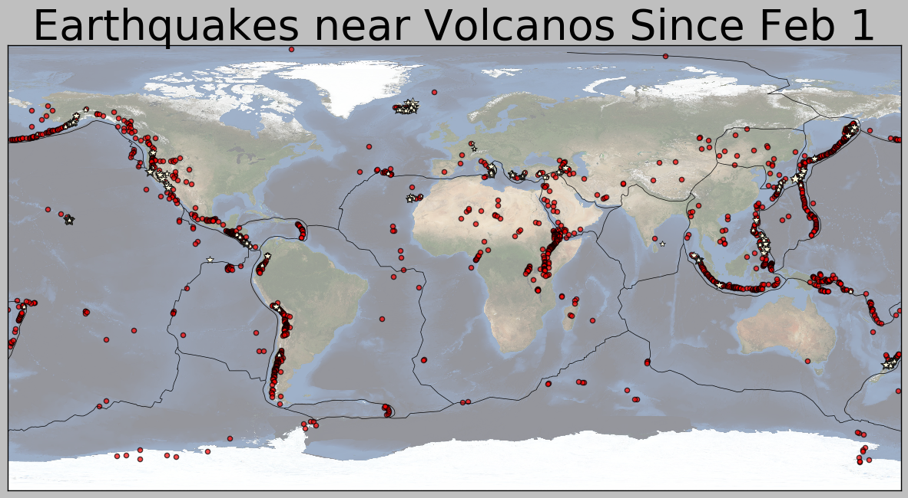
We see that they are quite close to tetonic plates. The white stars are the earthquakes, and the red circles are the volcanos. As we see, the earthquakes are all quite close to the volcanos. In addition, the size of the stars is based upon the magnitude of the earthquake.
import matplotlib.pyplot as plt; plt.rcdefaults()
import numpy as np
import matplotlib.pyplot as plt
eqdata1['Location'].value_counts()[:10].plot(kind = 'barh', title = 'Top 10 Locations with Earthquakes near Volcanos since Feb 1')
plt.show()
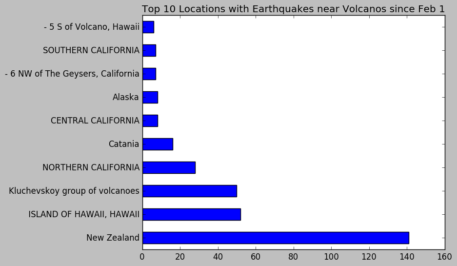
For Top 3 (out of 10) : We see that New Zealand has had the most earthquakes, followed by the big island of Hawai'i, then Russia. We also see that Central California, southern California, Northern California (which should include the Geysers) also have a lot of activity as well.
plt.figure()
plt.hist(eqdata1['Mag'].dropna(), bins = 20)
plt.xlabel('Magnitude')
plt.ylabel('Amount')
plt.title("Variation and Amount of Earthquake Magnitudes Since Feb 1")
plt.show()
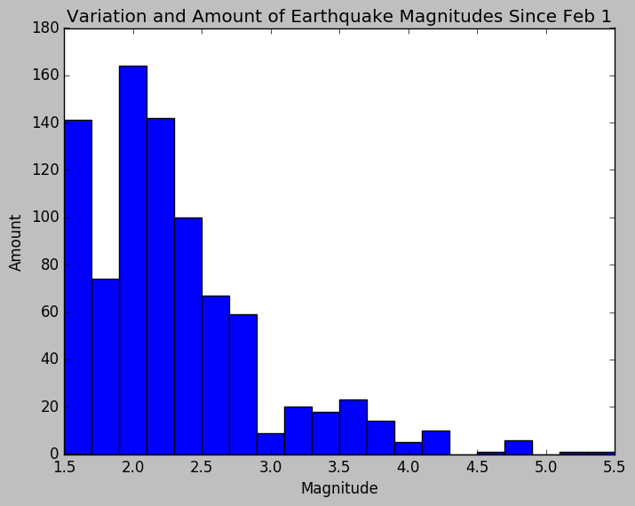
Most of the earthquakes magnitudes are quite small, as in 2.5 or below.
import matplotlib.pyplot
import pylab
import os
os.chdir('C:\Users\jenat\\Documents\\ringoffire')
import pandas as pd
import numpy as np
import matplotlib.pyplot as plt
import matplotlib as mpl
tes3 = pd.read_csv('earthquakesdata.csv',usecols = [1,2])#dataset
data1 = tes3.convert_objects(convert_numeric=True)
data1 = data1.rename(columns={' Depth': 'Depth'})
matplotlib.pyplot.scatter(data1.Mag,data1.Depth)
matplotlib.pyplot.title('Scatter Plot of Magnitudes and Depths of Earthquakes')
matplotlib.pyplot.xlabel("Magnitude")
matplotlib.pyplot.ylabel("Depth (M)")
matplotlib.pyplot.show()
C:\Users\jenat\Anaconda2\lib\site-packages\ipykernel\__main__.py:11: FutureWarning: convert_objects is deprecated. Use the data-type specific converters pd.to_datetime, pd.to_timedelta and pd.to_numeric.
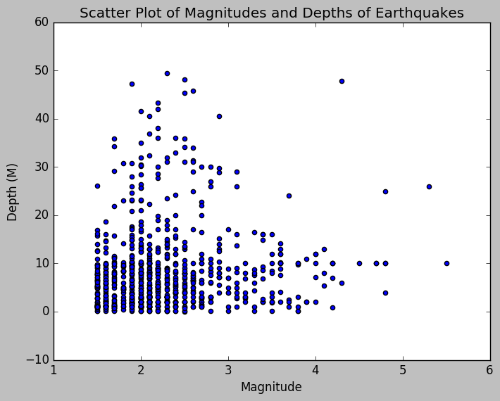
As we can see, there is not a strong correlation between Magnitudes of earthquakes and the depths of the earthquakes. Most of the earthquakes from smaller magnitudes to the larger ones are typically within the same range of depth, which indicates that magnitude an depth are likely not correlated.
import os
os.chdir('C:\Users\jenat\\Documents\\ringoffire')
import pandas as pd
data1.corr()
data1.corr(method='spearman', min_periods=1)
| Mag | Depth | |
|---|---|---|
| Mag | 1.000000 | 0.139534 |
| Depth | 0.139534 | 1.000000 |
The matrix correlation, using the spearman test concerning the two columns magnitude and Depth, indicates too that there is not a strong correlation between Magnitude and Depth.
When earthquakes occurr before a volcanic eruption, as seen in the 1980 eruption of Mount St.Helens, these earthquakes are caused by the movement of magma, from the earth's crust towards the mouth of the volcano. General earthquakes are caused by movement between two or more tetonic plates rubbing against each other.
with this in mind, we can speculate that the closer the earthquake occurs towards the volcano itself, the more we can speculate possible volcanic activity (should also keep in mind the history of the volcano itself and the last time it erupted and if it is in fact active)
With this in mind, we will look at the month of March 2017, and the distance from the volcanos the earthquakes occurred.
import os
import pandas as pd
import matplotlib.pyplot as plt
import matplotlib as mpl
os.chdir('C:\Users\jenat\\Documents\\ringoffire')
nv=pd.read_csv("march_near_volc.csv")
nv.columns = ['Volcano', 'Distance']
nv
| Volcano | Distance | |
|---|---|---|
| 0 | Kilauea | 3 |
| 1 | Bardarbunga | 5 |
| 2 | Bardarbunga | 7 |
| 3 | Bardarbunga | 10 |
| 4 | Bardarbunga | 7 |
| 5 | Bardarbunga | 7 |
| 6 | Santo Tomas | 10 |
| 7 | Nisyros | 22 |
| 8 | Tongariro | 2 |
| 9 | Paco | 21 |
| 10 | Kilauea | 2 |
| 11 | Katla | 4 |
| 12 | Katla | 3 |
| 13 | Grímsvötn | 13 |
| 14 | Süphan | 20 |
| 15 | Clear Lake | 20 |
| 16 | Unzen | 22 |
| 17 | Vesuvius | 8 |
| 18 | Askja | 23 |
| 19 | Kilauea | 23 |
| 20 | Panay | 7 |
| 21 | Panay | 6 |
| 22 | Clear Lake | 20 |
| 23 | Akyarlar | 13 |
| 24 | Lassen | 2 |
| 25 | Trident | 2 |
| 26 | Sabancaya | 8 |
| 27 | Ragang | 12 |
| 28 | Long Valley | 9 |
| 29 | Hakkoda | 10 |
| ... | ... | ... |
| 366 | Etna | 14 |
| 367 | Katla | 7 |
| 368 | Mauna | 15 |
| 369 | Kilauea | 23 |
| 370 | Katla | 3 |
| 371 | Kilauea | 18 |
| 372 | Ruapehu | 22 |
| 373 | Sabancaya | 12 |
| 374 | Kilauea | 18 |
| 375 | Clear | 20 |
| 376 | Hrómundartindur | 5 |
| 377 | Salton | 24 |
| 378 | Salton | 23 |
| 379 | Reykjanes | 7 |
| 380 | Taranaki | 22 |
| 381 | Clear Lake | 17 |
| 382 | Abu | 12 |
| 383 | Bardarbunga | 7 |
| 384 | Bardarbunga | 7 |
| 385 | Bardarbunga | 9 |
| 386 | Bardarbunga | 8 |
| 387 | Bardarbunga | 8 |
| 388 | Reykjanes | 13 |
| 389 | Bardarbunga | 10 |
| 390 | Bardarbunga | 7 |
| 391 | Bardarbunga | 8 |
| 392 | Askja | 13 |
| 393 | Reykjanes | 13 |
| 394 | Baru | 6 |
| 395 | Tjörnes Fracture Zone | 16 |
396 rows × 2 columns
Let's see how many of the earthquakes happened less than 2.0 km from the volcano:
nv.Distance[nv.Distance< 2.0 ].count()
7
This indicates that 7 earthquakes, so far in March 2017 were less than 2.0 km from a volcano.
More specifically:
nv['Distance'].describe()
count 396.000000
mean 13.212121
std 6.906644
min 0.000000
25% 7.000000
50% 14.000000
75% 20.000000
max 24.000000
Name: Distance, dtype: float64
As we see: out of the 396 earthquakes report for March 2017 that were documented to be near volcanos, the mean was 13.2, and 25% of the earthquakes happened 7 km from a volcano, while 50% of the earthquakes happened 14 km from a volcano, while 75% of the earthquakes happened at least 20 km from a volcano.
We also see that the max was 24 km and the min was 0. The earthquake with 0 km was located in Mammoth Mountain which is in Southern California.
plt.figure()
v_plot = nv['Distance'].hist(bins=20)
v_plot.set_title("Distribution of Earthquakes by their Distances from Volcanos")
v_plot.set_xlabel("Distance from Volcano (km)")
v_plot.set_ylabel("Number of Earthquakes")
plt.show()
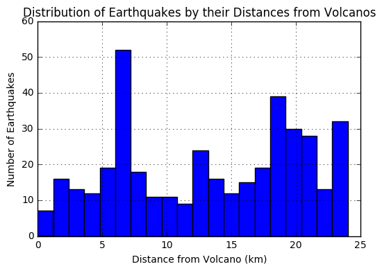
Since we do not know whether the earthquakes are caused by magma movement or are simply regular earthquakes, we can not say whether these earthquakes are related to volcanic eruptions. However, typically earthquakes before a volcanic eruption happen in many clusters. However, ones that are very close in my mind would raise some speculation.
CONCLUSION
There is not enough scientific evidence, or data to link earthquakes and volcano eruptions as being statistically significant to one another. More specifically, if an Earthquake can cause a volcanic eruption. While scientists are still debating the connection between the two, there is evidence that earthquakes occur (and rather frequently) near volcanos. With that information given, this brings the possibility that it is possible for earthquakes and volcanos to correlate with one another.
Another aspect worth looking into, is determing which earthquake is an aftershock and which earthquake is not.